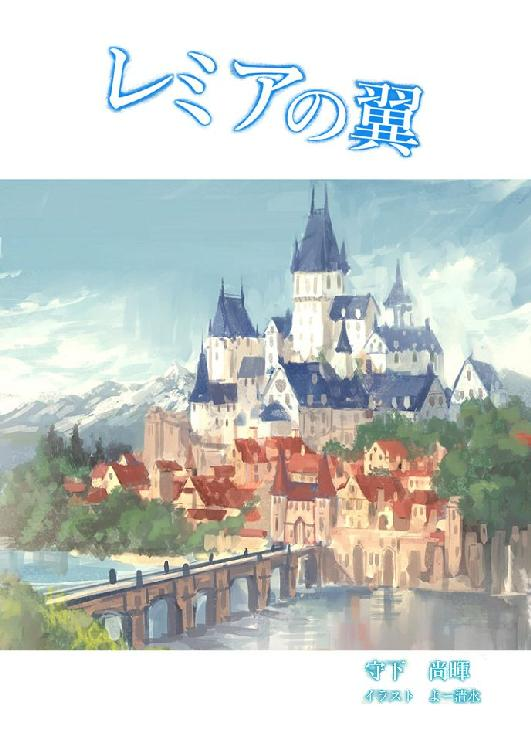
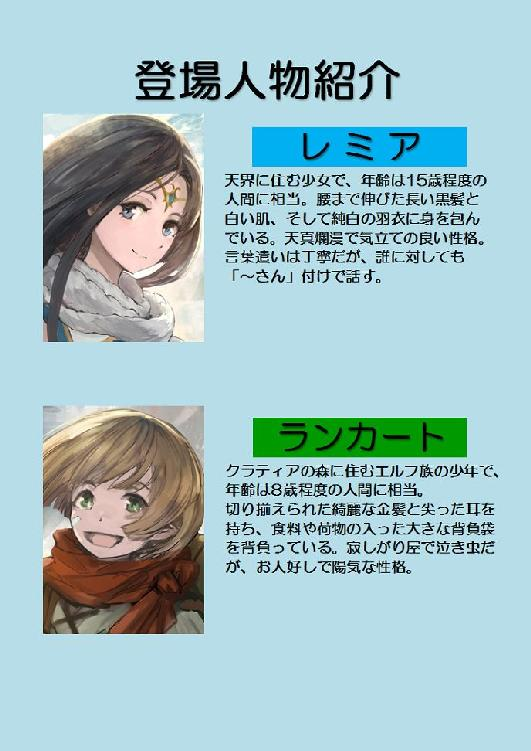
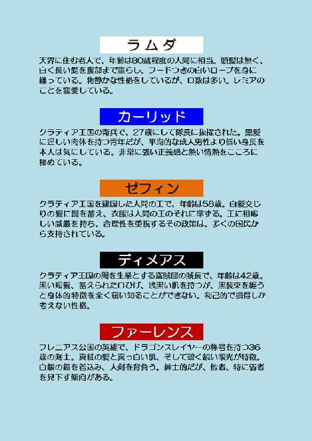
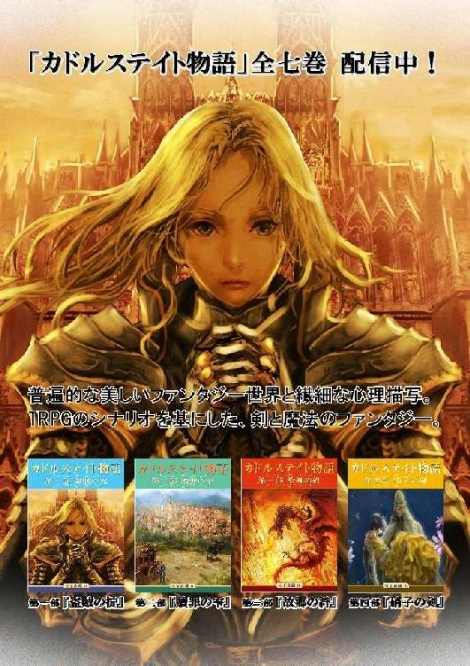
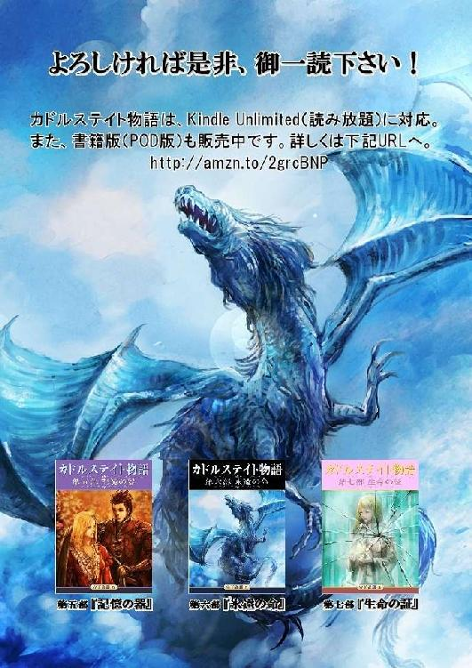

| レミアの翼 | |
| 守下 尚暉 | |
| pubfull (2017) | |



どこまでも果てしなく広がる星々の世界------。
やがて夜のとばりが明けると、天空に浮かぶその島が、黎明の空にくっきりと映し出された。
雲ひとつない、快晴であった。
大気は全てを包み込み、全ては大気に包まれていた。島は、その大気が織り成す森羅万象の理に全てを任せ、無限の重量と巨大さを秘めながらも音ひとつなく、この広大な世界を縦横無尽に廻っている。
春の朝の陽差しは暖かに、その光景を美しく照らし出すのだった------。
今日もまた、いつもと変わらぬ陽光の輝きを全身に浴びながら、レミアは『異界への鏡』と呼ばれる窓の前に立ち、その外に広がる世界を覗き込んでいた。その窓の向こうには、レミアの住んでいるこの世界よりも、遥かに広大な大地が映し出されているのだ。
「ねぇ、おじいさま？」
レミアは、自分の真後ろの椅子に腰掛けている一人の老人に話しかけた。その老人の名をラムダという。
「なんじゃ？」
ラムダ老はゆっくりとした動きで立ち上がり、レミアの方へと歩み寄り始めた。足が一歩地に触れる度に、白く長い髭が大きく揺れる。
「ほら、観てください。この窓の向こうの世界も、わたし達の住む世界と全く同じように太陽の恵みを受けています。それなのに、どうして向こうにある地上の緑は、少しずつ減っていくのでしょうか？」
以前からレミアには、その事が疑問に思えてならなかった。
大気と水と光と土------。
それが揃ってさえいれば、森の木々は正常に育つ筈である。少なくとも、今レミアの住んでいるこの島では、それが当たり前の事だった。しかし、窓の向こう側の世界では、この島と全く同じように大気も、水も、光も、土もあるにも関わらず、その森の木々が失われていくのだ。
「わかりませんなぁ。わしもずっと昔から、同じことを疑問に思っておったがのぅ」
ラムダ老は落ち着いた調子でそう答えた。老人は厳しく且つ優しい眼をしている。フードのついた長い真っ白のローブで全身を包んでいて、その袖から伸ばされている右手には、一本の細いロッドが握られていた。
「もしかして、おじいさまはこの窓の外の世界に行ったことがあるのでしょうか？」
その問いに対して、老人は首を横に振った。
「わたし、行ってみたいです！」
きっとレミアはそう言うだろう、とラムダ老は思っていた。そして、そんなラムダ老の期待通り（？）に、レミアはそう言ったのだ。
「レミアよ......」
しばらく一人で頷いてから、老人は口を開いた。しかしその後をすぐに沈黙の波が押し寄せ、辺りは静寂に包み込まれる。
「なんでしょう？」
そんなラムダ老の様子を窺って、レミアは話の続きを促した。ラムダ老は静かに顔を上げ、どこか遠くを見ているかのような姿勢で語り始める。
「遙かなる古の時代------。もう何億年も前の話になろうか......？ わし等の住んでおるこの世界が出来たばかりの頃じゃ。当時、まだこの鏡は無かった。この島と外の世界には、もともと境目など無かったのじゃ。そして我々は、いや、命の宿る全ての生物たちは、みな幸福に暮らしておった......」
「え？ 今も、わたしは充分に幸福だと思っていますけど......？」
レミアには、今ラムダ老の言わんとする事がよく分からなかった。しかし老人は、そんなレミアに構わず話を続ける。
「そんな中、『人間』と呼ばれる種族が現れてな。我々と同じように高い知能を備えた素晴らしい種族なんじゃが、その方向を過ったが為に精神が歪み、この世界の穏やかさを乱したのじゃ。沢山の種族の中の、たった一種の存在である『人間』は、大自然の営みを蝕み、世界中に自分の縄張りとなる線を引いて他の侵入を拒んだ。そして更に『人間』は、この天界の全てを手中におさめると、もっと広大な土地を求めて『地上界』と呼ばれる世界に降り立ったのじゃ。それ以来、『人間』が再びこの天界に災いを齎さないように、天界と地上界をハッキリ分ける境目『異界への鏡』が造られ、その門戸を硬く閉ざしたのじゃよ。つまり......」
ラムダ老は、右手に持つロッドの先をその鏡の方へと向けた。
「その『異界への鏡』の向こうの世界『地上界』は、『人間』という種族の住む、天界とは全く別の世界となっておるのじゃ」
レミアはその話を不思議そうな表情で聴いていた。自然界の営みを蝕み、自分の縄張りとなる線を引いて他の侵入を拒んだというその種族『人間』に、ぜひ会ってみたいと思った。そしてますます（鏡の向こう側の世界に行ってみたい）という気持ちが、レミアの中で強いものとなっていった。
「ラムダおじいさま。少しの間だけでも良いですから、わたし、その鏡の中の世界『地上界』に行ってみたいです。そして、その『人間』という種族にお会いして、話をしてみたいと思います」
レミアは必死になって、ラムダ老に頼み込んだ。
「言っておくが、地上界はこの天界のような温和な環境とは全く違う、遥かに過酷な環境なのじゃ。想像を絶するような事も多々起こるじゃろう。レミアよ、それでも行きたいと言うのか？」
「はい」
ラムダ老の問いに対し、レミアは間髪入れずにそう答える。それには、レミアの強い意志が表されていた。
老人は目を瞑り、数回頷いた後にまた頭を上げた。そして、その全てを見透かすかのような厳しい眼でレミアの顔を見続けた。もし、レミアの心の中に、ほんの少しでも迷いがあったなら見抜けるつもりだった。しかし、今のレミアの中には透き通った透明な心しか見当たらない。
「よし、よかろう」
しばらくの沈黙の後、老人はそう言った。その一言を聞いた瞬間、さっきまで必死になっていたレミアの表情が、みるみる内に『喜び』という感情に支配されてほころんでいく。
「ありがとうございます、おじいさま！」
レミアの声は弾んでいた。
「その代わりレミアよ......。この『異界への鏡』は、あまり長時間も開け放つ事が出来ん。三日以内に必ずここへ帰って来るのじゃ。そうしなければ、この窓は再び硬く閉ざされてしまう。一度閉ざされると、次に開くことが出来るのは数百、いや数千年後になるかもしれんからのぅ」
「はい。必ず三日以内に帰って来ます。でもおじいさま、地上界から天界に戻る時はどうすれば良いのでしょうか？ 地上界に降りるだけなら簡単そうですけれど、この広い空の中から天界の位置を見付けるのは、とても難しそうに思えます」
ラムダ老は、自分の手に握っていたロッドをレミアに見せた。そのロッドは軽い金属のようなもので出来ていて、光の加減が変わる度に不思議な光で反射していた。先端には大きく翼を拡げた小さな竜が、繊細に模られている。
「このロッドを使うのじゃ。雷の青竜『フロイザー』が現れ、きっとレミアを天界へと導いてくれることじゃろう。フロイザーはどんなに広い空間からでも、ひとつの物を見付け出す能力を持っておるのじゃ」
そう言って老人は、少女にそのロッドを手渡す。
「ありがとうございます、おじいさま」
「それからレミアよ、ひとつ注意があるんじゃが......」
ラムダはロッドをレミアに手渡すと、躊躇いがちに少し低い声を発した。
「はい、なんでしょう？ おじいさま」
少女はそんなラムダの目を見て、老人に話の続きを促す。
「そのロッドの力を我々天界の種族以外の者が使おうとすると、とてつもなく恐ろしい災いがその者に降り注ぐと言われておる。くれぐれも、失くしてしまわないよう気を付けるのじゃ」
レミアはそれを聞いて、大きく頷いた。
「わかりました。充分に注意します。それではおじいさま、行って参ります！」
レミアはとびきりの笑顔で老人に応え、その鏡の中へと吸い込まれていった。老人にはその笑顔が、万物を照らし出す太陽よりも、遥かに眩しく輝いて見えるのだった。
１
レミアは飛び立った。天界を離れ、広大な大地が広がるあの地上界を目指して------。
身体中の意識を集中させながら少しずつ高度を下げていくと、その壮大なる地上界の姿が、レミアの目に大きく映し出されてきた。
それは樹海だった。
大地に緑の絨毯を敷き詰めたかの如く、地平線の彼方まで、どこまでも果てしなく森が続いているのだ。
「おじいさまの仰っていた通り、地上界は天界と比べものにならない位に広いですね」
レミアはこの時、鏡越しでは無い本物の地平線というものを、初めて目にしたのだった。
彼女はもっと高度を下げ、空の上から森の中を観察し始めた。もしかしたらこの森の中に、ラムダ老の言っていた『人間』という名の生き物が住んでいるのかもしれない。そう思ったからだ。
「『人間』という生物は、どこでしょう？」
レミアは首を傾げた。森は生物たちの宝庫である。レミアの知っている限りでは、動植物たちの殆どが、森の中に住んでいるはずだった。
（おじいさまの仰っていた『人間』という種族は、一体どこに住んでいるのでしょうか）
レミアは空から舞い降り、その森の中へと足を踏み入れた。森の木々はしっかりと大地に根を張り、空に向かって真っ直ぐに伸びていた。それは、天界で見る木々など比ではない雄大さである。
「物凄く立派な樹......。こんなにまで大きくなるのに、一体何年くらい掛かったのでしょう？」
レミアは一本の立派な樹を見上げて、思わずそう呟いていた。耳を澄ますと、小鳥たちの囀りが途切れ途切れに聴こえてくる。その旋律は、この地に春の到来を告げているのだった。彼女はこの大自然の営みの中に身を任せ、その美しさにしばらく浸っていたが、すぐに気を取り直した。
（いけない。三日間しか時間が無いのでした）
思い出したかのようにハッとして、レミアは再び空高く舞い上がった。
（森に居ないということは、もしかしたら水の中に住んでいる生物なのかもしれませんね）
ふと、そんな考えがレミアの脳裏によぎった。そして、どこか近くに泉か湖は無いかと辺りを見回す。
森の中では春の暖かさが感じられていたのに、再び空に飛び立つと、たちまち身体が冷えてしまう。その肌を刺すような冷風の痛みを、春の陽差しが心なしか和らげてくれていた。すでにその輝きは、丁度真南の辺りに差し掛かり始めている。その時、どこまでも続く樹海の彼方に、その輝きと同じ位に眩しい光の帯が蛇行しているのを、レミアは見付け出した。
「川でしょうか？ あの川に沿って進んで行けば、どこか湖に辿り着けそうですね」
新たな期待を胸に抱きつつ、レミアは進路を、その光の帯のある方角へと定めた。そして一気に精神を集中させ、最大速度でそこへと向かう。レミアの思った通り、やはりその光の帯は川であった。川はいっぱいに水を湛えながら、その先に見える大きな湖へと繋がっている。
「あ、あれは......？」
レミアはそこで思わず声を上げていた。
拓けた森がそこにあったのだ。太陽の光を反射して眩しく輝くその湖の周りには、沢山の建物が建っていた。中でもひときわ目を引くのが、湖に浮かぶ島に建てられた立派な城である。真っ白い壁と細かい装飾で彩った青い屋根が、湖の反射光にさらされて、より一層その美しさを際立たせていた。その島から陸に向かって一本の大きな橋が架けられ、そこから街が続いている。街は、湖から流れ出る小川に沿って、森の方へと連なっていた。
この街を、人間たちは『メトレアの城下街』と呼んでいた。クラティア王国の王都である。クラティア王国は、まだ建国されて間もない森の王国で、その広大な美しい森の中には、エルフやロイトンと呼ばれる亜人種が住んでいると言われている。
この国の王ゼフィンが、かつてリグラット王国の公爵の地位を得たとき、ここメトレアの森を領地として授かった。他の国々の王からもそれが認められ、ゼフィンは一国の王となり、クラティア王国を建国してこの地を治めるようになったのだ。
彼は、近隣の列強大国に追い付け追い越せの勢いで、膨大の面積の森を切り拓き、そこに巨大な城や街を築き上げた。今では、周りの国々に引けを取らない程の王国になったが、そのメトレアの豊かな森は、建国時から物凄い勢いで減少し続けている。それにも関わらず、今も尚、ゼフィンの都市計画は進む一方であった。
この世界の事を全く知らないレミアにとって、そんな王国の動きなど知る由もない。彼女は、この街のあまりの美しさに感嘆の声を上げた。そしてそれと同時に、この街に住んでいる生物たちの姿を見て、驚きの声を上げずにはいられなかった。なんと、その生物たちは、自分たち天界の種族と全く同じ姿をしていたのだ。
（もしかして、あの生物がおじいさまの仰っていた『人間』なのでしょうか？）
レミアは空から舞い降り、その街の門をくぐって中に入っていった。
２
街の中は、その優雅な外観とはうって変わって騒々しかった。今レミアの歩いている大通りには、ものすごい数の『人間』と思しき生物たちが、実に忙しそうに行ったり来たりを繰り返している。
「ごめんください、あなたが『人間』という生物でしょうか？」
レミアは、そのとき自分の一番近くを歩いていた男に、そう尋ねた。男は一瞬立ち止まり、見下ろすような姿勢でレミアの顔を見る。そしてしばらく沈黙が流れたが、男はその沈黙を破ろうともせず、レミアを横目に通り過ぎ、人混みの中へと消えていってしまった。
男の反応を待っていたレミアは、予想外の彼の行動に拍子抜けしてしまったが、もう一度気を取り直して、今度はすぐ近くを歩いている中年女性に話し掛けてみた。
「あなた達が、『人間』という生物なのでしょうか？」
「変な娘ね」
その一言がレミアの耳に返ってきた。そしてふと気付くと、その女も大勢の人の渦の中に巻き込まれて、いつの間にか姿を消していた。
（一体どうしたのでしょう。みなさん、よほど火急な用事があるのでしょうか？）
と、レミアは思った。
------その時！
突然もの凄いスピードで、レミアのすぐ横をすれすれに、大きな馬車が通り過ぎていった。
「危ねぇな、気を付けろ！」
馬を操っていた男の、吐き捨てるような罵声がレミアの耳を突く。はい、とレミアが答えたものの、馬車は砂塵を巻き上げながら少しずつ小さくなっていき、そのうち見えなくなっていた。
レミアは、馬車が飛び交うこの道の向こう側へと、細心の注意を払いながら渡った。そしてホッと溜め息をついて、目の前の建物を見た。
その建物は花で溢れていた。赤や白や黄色の色とりどりの鮮やかな花々が、みんな太陽に向かって顔を上げて美しく輝いている。レミアはしばらくその美しさに見入っていたが、ひとつだけ不思議に思うことがあった。その花の一本一本や、それを纏めた花束に、数字の書かれた札が掛けられているのだ。
「それにしても、綺麗な花......」
レミアは、その中の一本を手に取ると、その匂いを嗅いでみた。甘い、とてもいい香りがする。が、その香りに混じって何処からともなく、とても美味しそうな匂いが漂ってきた。まるで、花の香りに誘われる蜜蜂のように、レミアはその匂いに誘われて、ある建物の前まで来ていた。
その建物は、周りの建物とは一風変わった雰囲気の建物だった。入り口の所に硝子の枠が組まれていて、その中に沢山の美味しそうな御馳走が飾られているのだ。
「とてもいい香りがします。これは何という食べ物なのでしょうか？ すごく美味しそうですね」
レミアはその御馳走を見て、思わずそう声に出していた。ちょうど空腹を覚え始めていたし、いつもなら食事を摂っている時間帯でもある。入口からは、さっきの味覚を刺激するような香りが漂ってきて、レミアの鼻を擽り始めていた。レミアはその建物に吸い込まれるかのように、自然と入口の取っ手に手を掛けて、中に足を踏み入れた。
「いらっしゃいませ」
いきなり入口のすぐ側に立っていた黒い服の男性に声を掛けられ、はい、と答えるレミア。周りを見回すと、そこには沢山の人々がまるで夜空の星々のようにそれぞれ店内に散らばって、思い思いのテーブルの前に腰を下ろしていた。そんな彼等の視線が今、一斉にレミアの身体に穴が空かんばかりに浴びせ掛けられている。
レミアは少し緊張した面持ちで、自分の一番近くにあったテーブルの前に腰を下ろした。
「ご注文は何に致しましょうか？」
さっきの黒い服の男性が、レミアにメニュー表を渡しながら、そう尋ねてきた。
「心のこもった美味しい食べ物なら、わたし何でも頂きたいと思います」
レミアは笑顔で答える。
「それでしたら、これなどは如何でしょうか？」
男性がメニュー表を指差しながら言った。そこには『フルコース』と書かれている。
「はい、あなたにお任せします」
「かしこまりました。しばらくお待ち下さい」
男性はそう言うと、恭しく一礼してどこかに行ってしまった。
独特の暗い灯りが、室内をぼんやりと浮かび上がらせている。人は大勢居るのだが、笑い声ひとつなく、静か過ぎるほど静かだった。目を瞑っていると、誰も居ないのではないかという錯覚にさえ陥りそうだ。
（何だか、変わった雰囲気の場所ですね。人間という生物は、皆さん、こういう処で食事をされるのが習慣なのでしょうか）
レミアは、いつも自分が食事をしている天界との、あまりの違いに驚いていた。そんな事を考えている内に、レミアの前にとても美味しそうな御馳走が次々に運ばれてくる......。
「それではどうぞ、ごゆっくり」
最後に男性がそう言い残すと、一枚の紙切れをテーブルの隅に置いて去って行った。
「どうも有難うございます、いただきます」
レミアは、男性が去っていった方向に向かって一礼すると、その御馳走に舌鼓を打ち始めた。ところが問題は、このあとに起こったのだ......！
３
「食い逃げだー！」
メトレアの城下街の大通りを、そんな大声が響き渡った。人々の視線がみな、その声の方へと注がれる。
「誰か、そこの娘を捕まえてくれ！ その娘はウチのフルコースを食い逃げしたんだ！」
黒服の男性が血相を変えて叫ぶ。しかし、彼が追い掛けている娘の足は、異様な程に速かった。娘はもの凄いスピードでこの大通りを駆け抜けていく。いや、飛んでいるようにも見えたのは気のせいだろうか？ 人々はそんな光景を、全く関心ないかのように、ただ茫然と眺めていた。
レミアには訳が分からなかった。自分はただ、用意された食べ物を全て食べ尽くしただけなのだ。しかし、食べ終えて外に出ようとしたとき『お金』という物をその男性から要求された。レミアにはそれが何なのか分からず、『お金』という物は一切持っていないと告げると、それまでとても親切に接してくれていた男性は急に態度を豹変させて怒り出し、彼女は街の中を追い回される羽目になったのだ。
追い掛けて来るその男性の息は、かなり上がっている様子だったが、それ以上にレミアは疲労していた。食事を摂ったばかりというのもあるが、天界から地上界に降りる事で、かなりの精神力を消耗していたのだ。
このままだと倒れてしまう、とレミアは考え、どこか安全な場所はないかと、この大通りを隅々まで見回した。すると、馬車が五台ほど並べて停めてある大通りの端の看板に、『どうぞお気軽にお乗り下さい、目的地までお運び致します』と書かれてあるのが彼女の目に留まる。レミアは素早く、そのうちの一台に滑り込むように乗り込んだ。
「お客さん、お急ぎのようだね。どこまで行くんだい？」
馬車の御者台には、レミアを待っていたかのように一人の男が乗っていて、手綱を握っていた。
「はい、湖の畔まで連れて行って貰ってもいいでしょうか？」
レミアは咄嗟にそう答える。
「お任せあれ、お安いご用でっせ！」
男はそう答えると同時に手綱を強く引き、馬車を走らせ始めた。流れる景色の中に、さっきまで必死に自分を追い掛け回していた黒服の男性が、少しずつ小さくなって消えていくのを見て、レミアはホッと溜め息をついた。
------それから数分後。
馬車は湖の畔に到着した。そこは、さっきの大通りから湖を挟んで反対側に位置する場所で、建物の群れと人の渦の代わりに、美しい森の木々が並んでいた。
「お客さん、着きましたぜ」
馬を操っていた男は、そうレミアに声を掛けた。はい、とレミアが答え、馬車から降りようとすると......。
「三百メルクになります」
と言って、男はレミアに手を伸ばしてきた。
「なんですって？ もしかして、また『お金』という物が要るのですか？ わたし、その『お金』という物は持っていないのです」
レミアは本当に驚いた。人間の社会は、一体どんな仕組みになっているのだろう？
「なんだって？ 金を一文も持っていないのかよ！」
それを聞いて、さっきまで優しくレミアに微笑み掛けていたその男の表情が、みるみる内に険しくなった。
「あんた、可愛い顔して良い根性してんな？ 名は何ていうんだ！」
男は激しくレミアを怒鳴りつける。
「はい、レミアといいます。よろしくお願いします」
レミアは、地上界に来て名を尋ねられたのは初めてだったので、男の質問に対して、出来るだけ丁寧に答えていた。
「レミアか......よし、名前は覚えたぞ！ 警備保安官に訴えてやる！ お前の親を呼び出して、キッチリ金を払わせた上で謝罪もさせるからな！ 覚えてろよ、この小娘め！」
男はそう吐き捨てると、荒々しく馬車を動かし始める。
「わたしの名前を覚えて下さって、ありがとうございます、って、あれ？ もう行ってしまわれました......」
レミアが男に向かって一礼して顔を上げた時には、もう既に馬車はそこに無く、街の方に向かって走り出していた。レミアはその馬車を見送りながら、天界でラムダ老が語ってくれた話を思い出す。
（沢山の種族の中の、たった一種の存在である『人間』は、大自然の営みを蝕み、世界中に自分の縄張りとなる線を引いて他の侵入を拒んだ。そして更に『人間』は、この天界の全てを手中におさめると、もっと広大な土地を求めて『地上界』と呼ばれる世界に降り立ったのじゃ）
あのとき、レミアは本当にそんな種族がこの世界に居るのだろうか？ と疑問に思っていた。しかし今、実際に人間たちの世界の街に触れてみて、ラムダ老の言っていたことが真実であると思い知らされたのだ。人間たちの営みとその考え方は、自分がこれまで過ごしてきた天界の営みとは、大きく異なっているようだ。それはレミアにとって、この上なく衝撃的なことだった。
（命の宿る全ての生物たちは、みな幸福に暮らしておった......）
まるで過去を語るかのように話していたラムダ老の真意が、今のレミアには少し分かるような気がした。なぜならレミアが観た限り、人間たちが幸福に暮らしているようには、とても思えなかったからである。
もう陽は山合に傾きかけ、辺りは少しずつ暗くなり始めていた。
（今日の宿は、どうしましょう。わたしは、人間たちにとって重要な『お金』という物を持っていないから、人間を頼るのは難しそうですね......）
だんだんと冷え始める大気の流れを感じて、レミアは再び歩き始めた。
４
------あれから何時間が経ったのだろう。
レミアは完全に途方に暮れていた。どこの家に寄っても宿を貸してもらえず、食べ物さえ分け与えて貰えなかった。宿を貸してくれそうな施設は幾つかあったものの、人間たちは決まって『お金』という物をレミアに要求し、レミアはその要求に応える事が出来なかったのだ。通りすがりの人間に話し掛けても、皆とても忙しそうで、レミアの声に反応を示してくれる人間など一人たりとも居なかった。何よりも、人間たちの笑顔を見ることが滅多に無いのである。
凍えるような寒さに耐えながら、レミアはいつの間にか、また街外れの森の前に戻ってきていた。ここに来れば、なぜかレミアの心が安らぐ。
「さて、これから一体どうしましょうか......」
レミアはだんだん眠たくなっていた。今日はいつも以上に動いたせいもある。
（言っておくが、地上界はこの天界のような温和な環境とは全く違う、遥かに過酷な環境なのじゃ。想像を絶するような事も多々起こるじゃろう。レミアよ、それでも行きたいと言うのか？）
ラムダ老の言葉が、再びレミアの耳に蘇ってくる。自分は、ラムダ老に念を押されても尚、それでも地上界に行ってみたいと言って天界を飛び出して来たのだ。レミアの手には、老人から渡された例のロッドが握られている。今すぐにでもこれを使えば、きっと天界に帰れるに違いない。しかしレミアは、もっともっとこの世界のことを眼に焼き付けないと、まだ天界に帰る訳にはいかない、と思い直した。
------と、その時。
森の奥の方がガサガサと音を立ててうごめいたのが、レミアの目にハッキリと映った。
「何？ 誰か居るのですか？」
レミアは、音がした森の方に向かって呼び掛けてみる。しかし、ガサガサという音が少しずつ近付いてくるだけで、返事は返ってこなかった。その気配は一方向だけでなく、森のあらゆる方向から感じられる。
（何でしょうか？）
レミアがそう思った次の瞬間------！
突然、その暗い茂みの中から、真っ黒い装束に身を包んだ人間の集団が躍り出た！ その数は八人。
レミアは突然の出来事に驚いて一瞬身構えたが、その黒装束の集団は奇声を上げながら、そんなレミアに向かって一気に走り込んできた！ そして、その内の一人がそのままレミアに飛び掛かってくる！
レミアは瞬間的に危険を察知し、素早く身を翻して黒装束の奇襲を躱したが、その黒装束がレミアの横を通り抜ける瞬間、右手に握っていた物が弾かれたような感覚を覚えた。まさか、と思ってレミアは自分の右手を見る------と、なんとラムダ老から渡されていたロッドが無い！
「お頭！ 警備保安官がすぐ近くまで来てますぜ！」
そのとき、黒装束の一人がしゃがれた声を発した。
「ちっ、折角の上玉なのに......勿体無いがズラかろう！」
お頭と呼ばれた黒装束の男がそう指示を飛ばすと、他の七人は仕方なくその声に従って、一斉にさっき現れた森の中へと姿を隠し始めた。レミアから遠ざかっていくその黒装束の集団をよく見ると、その内の一人が、さっきまでレミアが握っていたロッドを確かに持っているのが見える！ この集団は盗賊団だったのだ！
「ちょっと待って下さい！ それはわたしの大切なロッドなんです！ それを持って行かないで下さい！」
レミアは必死になってその集団を追い掛けようとした。しかし、盗賊団の身に付けた黒装束が、見事に夜の闇の中に溶け込んで、その行方を追うのは非常に困難だった。僅かに見える八つの影は信じられないほどの速さで、メトレアの森の中へと染み込んでいく。レミアは何としてもロッドを取り返そうと、精神集中を始めて空に飛び立とうとした。
「そこの君！ 待ちたまえ！」
その時、突然レミアの後ろから、今度は松明を持った別の人間の集団に声を掛けられ、レミアの精神集中が乱された。
「君かね、レミアとかいう名の娘というのは？」
その集団の中の一人が、レミアを威嚇するように毅然とした態度で問い糾した。
「はい、わたしがレミアです」
レミアは、どんどん遠ざかっていく黒装束の八人を見失わないように、目で追い掛けながら答えた。
「我々は警備保安官だ。君に関する良くない話が、本庁の方に沢山届いている。同行してもらうぞ！」
「え？ わたし、今それどころでは無いんです。おじいさまのロッドが......」
と、レミアは言い掛けたが、警備保安官と名乗ったこの人間の集団に完全に取り囲まれてしまい、身動きひとつ出来ない状態になっていた。
「ごめんなさい、行かせて下さい。わたし、今とても大変な事になっているのです！」
「話は詰所で聞かせて貰おう。容疑者の身柄を拘束した、連行する！」
１
暗かった。
高い位置にある鉄格子つきの小窓からの僅かな光が、この部屋の明かりの全てだった。水の滴る音が、規則正しく耳に染みこんでくる。
（もうこれ以上、時間を掛けることは出来ません......）
そんな思いで、彼女の胸はいっぱいだった。彼女はつい先程、真っ黒い装束に身を包んだ八人の盗賊団に襲われて、大切なロッドを失くしてしまっていた。それが一体何を意味するかは、彼女しか知らない。いや、知っている者が居たとしても、その者は遥か遠い星空の彼方に居るのだ。
彼女はふと、その小さな窓から外を覗いてみた。そこには、緑豊かなクラティア王国の王都、メトレアの美しい夜景が輝いている。この街の美しさとは裏腹に、ここに住む人間たちの心は荒み、淀んでいるのを、レミアは今日一日で痛感させられていた。
「よぉ、あんた、新入りかい？」
レミアの居る部屋と廊下を挟んで斜向かいの部屋に居る、薄汚い男が話し掛けてきた。とは言っても、部屋の位置関係から、互いに相手の姿を視認する事は出来ない。
「名前はなんていうんだぃ？」
「はい、わたしはレミアといいます。よろしくお願いします」
レミアは素直に答えた。
「うぉ？ 驚いたな、随分可愛らしい声じゃねぇか。あんたみたいな若くて可愛らしい声の娘が、こんな所に来るとはよぉ。あんた、一体何をやらかしたんだぃ？」
男は忍び笑いを漏らしながら、さらにレミアに尋ねてくる。
「......何をやらかした、と言われましても......」
レミアは完全に困り果てた顔をした。一体ここは、何なのだろう？ 沢山の人が、この中の小さな部屋に閉じ込められて生活をしているみたいだったが、なぜ自分がこのような場所に連れて来られたのかさえも、彼女は全く理解していなかった。彼女に分かる事と言ったら、あと二日以内にあのロッドを返して貰わなければ、自分は天界に帰ることが出来なくなる、という事くらいだ。
「そこの方、真っ黒い装束の八人組をご存知ですか？ わたし、その人たちに返して貰わなければいけない物があるのです。もしご存知でしたら、教えて頂けないでしょうか？」
今度はレミアの方から、その男に尋ねかけた。
「なに！ 黒装束の八人組だと？ そりゃ、あれだぜ」
「ご存知なのですね！」
男が含みのあるような物言いだったので、レミアはもっと詳しく話を聞こうとした。
「あんた、知らねぇのかよ？ 今、指名手配中の『ディメアスギルド』って名の盗賊団だぜそりゃ。この俺もあまり詳しくは知らねぇけどよ。なんでもクラティア王国の裏社会を生業とするシーフギルドで、最近豊かになってきた王国の財を狙って、陰で動き回ってるって噂さ。そいつら、自分たちの利益の為なら人さえも平気で殺してしまう、とんでもねぇ連中だと、もっぱらの評判だぜ」
「何ですって？ 人が......人を......殺す？」
レミアは男の言っている言葉の意味が分からず、声に出して聞き返した。
「あぁ、あんたそいつらに襲われたんだとすれば、命があるだけ運が良かったってもんよ」
それはレミアにとって、到底考えられない事だった。人間が、同じ種である人間を殺すなんて想像もつかない。レミアにはそんな想像など、絶対に出来る筈がなかった。
「その人たちは、いま、何処に居らっしゃるのでしょうか？」
「んな事まで、オレが知るかよ！ そいつらは自分たちの隠れ家に居るんだろうし、それにオレはそんな奴等とは関わり合いになりたかねぇからな！」
男は、呆れたような声を出した。それを聞いてレミアは、今すぐにでもその隠れ家を探し出さなければならない、と思った。そして自分を繋いでいる重い鎖と、そこに掛けられている鍵を観た。レミアは少しずつ精神を一点に集中させ、それを凝視し続ける。
すると、レミアの見つめている重たい鍵の部分が、だんだんと熱を発して赤く染まってきた。それでもレミアはそれを凝視し続ける。そのうち火花が弾けたかと思うと、鎖はそこから真っ二つに断ち切られていた。
「ところでよぉ、あんた。あの噂聞いたか？ フレニアス公国の英雄ファーレンスが、隣町のメイテに来てるんだってよ。オレ、奴の大ファンなんだよ、ひと目でも良いから見てみたいんだよなぁ。剣を使わせれば、奴以上の達人は居ないって言うぜ！ あんたも一度見てみたいだろぅ？ な？ おい、聞いてんのかよ、あんた------あれ？ 居ない......のか？」
２
とてつもなく強大な退屈の波が、カーリッドを襲っていた。
暇だった------。
彼にとってみれば、どんな戦いよりも、この時間が最も苦しい戦いだった。王城の地下にある牢獄の見張り。それが彼の任務である。そして、これ程つまらない任務は他にない、と彼は確信していた。彼が国からそれなりに信頼を得ているからこそ、若くして牢獄の警備隊長に抜擢されたのもまた事実だが、こんなにも退屈な目に遭うくらいなら、ほかの危険な任務に就いた方が余程良かったとさえ、彼は思ってしまうのであった。
この部屋の中には扉が二つしかない。一つは一階に続く出入口で、もう一つは罪人たちを収監している牢獄へと繋がっている。外の光が全く入ってくることのないこの部屋を照らし出しているのは、ランタンの頼りない炎だけだった。
（今、一体何時ころだろうか？）
ふと、そんな疑問が彼の脳裏に過ぎった。眠たそうな衛兵たちの姿を見るに、もう明け方に差し掛かっているのだろうと予想できるし、何よりカーリッド自身、かなり眠たかったのだ。日が昇れば交代の衛兵が来て、今日のカーリッドの任務は一応終わりだが、まだそれには少し時間がありそうだ。
（眠気覚ましに一発、脱獄者でも出ないかな）
そんな考えが、彼の中に浮かんできた。
しかし、列強国に囲まれた立地と、それに対抗する為に鍛え上げられた強い騎士団。領土内に広がる豊かな森と、そこに眠る豊富な資源。そして何より、王ゼフィンの絶大な権力と、それに対する国民の支持。現在、発展の最前線にあるクラティア王国の牢獄から、脱獄を試みる愚か者などそうは居ないだろう。もし居たとしたら、それは余っ程の大馬鹿者か、余っ程の実力者かのどちらかだ。
そのことを、カーリッド自身がよく知っていた。だからこそ、退屈なのだ。
「カーリッド様！」
その時、突然牢獄側の扉から二人の衛兵が姿を現し、この部屋の眠気に満ちた空気を一掃するかのような緊迫した声を出して、カーリッドに走り寄ってきた。
「どうした、何かあったのか？」
その衛兵の慌ただしさに、ただ事ではないと感じたカーリッドは、自分の周りに漂っている眠気を振り払いながら聞いた。
「はい、大変であります！ 実は、先程この牢獄に入ったばかりの、レミアという名の娘の姿が、どこにも見当たりません！」
「......なんだって！」
そんな筈は絶対ない、と思いながら、カーリッドは牢獄へと続く扉に入り、そのレミアという名の新入りの姿を見届けてやろうと、彼女が居るべき部屋を見た。しかし、その部屋には誰も居なかった。ただ天井から滴る水と、そして断ち切られた漆黒の鎖が目につくばかりである。
「そんな、馬鹿な......！」
カーリッドは、この牢獄の扉を開け放ち、独房内を隅々まで調べてみたが、どこにも穴や抜け道など見当たらない。この牢獄から地上に出る為には、自分たちが警備していた部屋を必ず通らなければならない筈なのだ。そして彼は、一秒たりともその部屋から離れなかったし、脱獄者の姿など見ていない。カーリッドは愚直なまでに真面目な男だ。これまでに、一度たりとも居眠りなどしたことがない。
しかし今、現実としてカーリッドの目に映るこの牢獄の有様は、彼のそんな考えを完全に否定していた。罪人を繋ぎとめていた頑丈な鎖が、鍵の部分から見事に断ち切られているのだ。
「おい、お前！ ここに居た娘がどこに行ったか知らないか？」
カーリッドは通路を挟んで斜向かいの牢獄に収監されている、薄汚い男に聞いた。
「オレにも分からねぇ。話をしていたら、いきなり消えちまったでな」
男は首を横に振る。
（最初あの娘を見た時、ただの小娘と侮っていた自分が迂闊だった......）
カーリッドは、この上ない悔しさを噛み締めていた。
「ここに居た娘が犯した罪は、なんだった？」
カーリッドは、自分の部下に尋ねる。
「はい。記録によりますと......食い逃げ、タダ乗り、万引きを、今日だけで八件連続で行った上、今は家に帰れないと供述し、レミアという自分の名前以外のことを決して語ろうとしない家出娘のようです。恐らく親とケンカでもして、家を飛び出したのでしょう」
「そうか......。そんなとんでもない不良娘を、このまま野放しにしておく訳にはいかないな。必ず更生させてやる！ 今すぐ捜索を開始しろ！ 本庁にも連絡だ！」
カーリッドは、正義の名のもとにおいても、その娘を必ずここへ連れ戻す！ と、心に誓っていた。
３
夜の暗闇を切り裂くものがあった。
全速力だった。
一刻も早く、あのロッドを見付け出さなければならない。黒装束の八人組に襲われた森を目指し、レミアは夜のメトレアの上空を飛んでいた。そして、その方向にレミアは不思議な光を見た。
（あれは何でしょうか......？）
夜の闇の中、ひときわ明るく輝くものが、そこに見えるのだ。こんな真夜中に、一体何の灯りなのかを疑問に思ったレミアは、それを確かめる為に、もっと速度を上げてそこに向かった。そして、そこに信じられないものを見た！
それは、巨大な炎だったのだ。
その炎は、大地に広く、天に高く、絶大な勢力を保ちながら、クラティア王国の象徴とも言える、美しい森の木々を焼き払っていた。最初それを見たとき、火事かと思ったレミアであったが、燃え盛る炎の周りで、それを頼もしげに見つめている大勢の人間たちが居ることから、明らかに人為的な炎だと思われた。
（なぜ！）
と、レミアは思った。なぜ、こんなにも立派に育った美しい森を、人間たちは焼き払おうとするのか？ レミアにはその理由が分からなかった。森は生物の宝庫であり、全ての恵みの源であると、天界では考えられていたからだ。しかし、人間たちにはそんな考えなど微塵も無いのか、新しい火を次々に森の中へと投げ入れ、その炎の規模を意図的に拡大させているようだ。天界も地上界も、全く同じ太陽の恵みを受けているにも関わらず、地上界の森だけが減っていく理由を、レミアは今、突然に理解した。
多くの疑問が渦巻く中、レミアは例の盗賊たちが居ないか注意深く調べてみたが、残念ながら彼等の姿は見当たらなかった。
もしかしたらこの森の中に、あの盗賊たちの隠れ家があるのかもしれない。そう思ったレミアは、さらに森の奥を目指し、その炎の上空を熱風で吹き飛ばされないように、全速力で突き抜けて行こうとした。その途端、すさまじい勢いの熱風が、レミアを飲み込まんばかりに高く吹き上がり、小さなレミアの身体を包み込んだ。その熱気の中、レミアは何としてもそこを乗り越えようと、必死になって精神力を振り絞る。
しかし、炎はそんなレミアの努力を、完全に無にしていた。奥に進めば進むほど、炎の勢いは強くなる一方だ。
レミアは、下から吹き荒れる熱風に煽られながら、だんだんと意識が遠のいていくのを知覚した。重い鎖の鍵を断ち切り、透明になって城を抜け出し、そこから全速力で空を飛び続けて、彼女の体力も精神力も、すでに限界に達していたのだ。
（おじい......さま）
ふと、レミアの頭の中に、自分をこの地上界へと送り出してくれた、あの優しいラムダ老の顔が浮かび上がってきた。そして、豊かな天界の美しい景色と、そこに住む沢山の生き物たちの姿が......。まだ幼い頃の自分の姿も見えてきた。あれは一体、いつの事だっただろうか......。
（ねぇ、おじいさま！ たいへんたいへん！）
（おお、どうしたレミアよ、そんなに慌てて）
（たいへんです、おじいさま！ ユニコーンのスレイアが怪我をして、走れなくなってしまったみたいです。わたしの力では治せないの。おじいさま、治して頂けないでしょうか？）
（そうかそうか、どこじゃ？）
（こっちこっち！ ほら、おじいさま、急いでください！）
（まぁ落ち着くんじゃレミア）
（ここです、おじいさま。スレイア、大丈夫？）
（うむ、これはひどい......。待っておれよ）
（はい。おじいさま、お願いします）
（我、白き祈りにて、汝、穢れを浄め給う。我、太陽の祝杯を掲げ、汝に生命の福音を齎さん。聖なる燈火の導きを以て、汝の魂に祝福を与え給え）
（おじいさま、眩しい！）
（ほれ、もう大丈夫じゃ）
（おじいさま、すごい！ あんなにひどかったスレイアの怪我が、すっかり治っています！ おじいさまの力って、本当にすごいです！）
（いや、それは違うぞレミアよ）
（違う？）
（うむ。今、このスレイアの怪我を癒やしたのは、わしの力ではない。レミア、おぬしの力じゃ）
（どうして？ 癒やしの呪文は、おじいさまの力なのに......）
（傷ついて走れなくなってしまったスレイアを見たとき、それを何とかしたいと思ったから、レミアはわしを呼びに来たのじゃろう？ そのレミアの内に秘められている『親愛の情』から発せられた力に、わしは突き動かされ、そして最終的にスレイアの怪我を癒やすことが出来たのじゃ）
（よく分からないけれど、そうなのね。怪我が治ってよかったね、スレイア）
（幸せそうな顔をしておるな、レミアよ）
（はい、わたしすごく幸せです、おじいさま！）
（人は、誰しもがその心の中に、親愛の情を持っておる。親愛の情とは、いわば他者を想う心------。不幸に陥っている者を見た時、それを自分の事として捉え、何とかしたいと想う心なのじゃ。そして、その不幸に陥っていた者が幸福になれた時、自分も幸福になっている。今のレミアのようにな......。他者のよろこびを、自分のよろこびに出来る幸福。それが真の幸福ではないだろうか？ この天界だけでなく、地上に広がる全ての世界も、そんな、他者を想い合う心で成り立つ、親愛の情に満ちた世界になればいい。そうなれば、不幸と感ずる者など、一人も居なくなるであろうに......。そうすれば、全ての生物たちが、幸福で居られるだろうに......）
１
見渡す限り、焦土が続いていた。
焼けた木の焦げ臭い匂いが辺り一面に漂い、昨夜の業火の余韻が、細く煙を上げてふつふつと燻っていた。空からは微かに雨が降り、まだしつこく煙を上げているその小さな火を少しずつ消していた。細かく散りばめられた、春の雨だった。
そんな焼け跡を彷徨う、ひとつの小さな人影があった。
「あれぇ、おかしいなぁ。たしかにこの辺りだったハズなのに......」
半泣き状態のその子供は、ただひたすらこの焼けた森を彷徨い続けていた。その子供の名前を、ランカートといった。煤にまみれて真っ黒になった頬。大きく見開かれた丸い瞳。そして真っ直ぐ上に伸びている尖った耳。彼は、このメトレアの森に住んでいる亜人種、エルフ族なのだ。エルフ族とは、かつて森を棲家とした妖精族の末裔で、非常に希少な種族だが、メトレアの森のような美しく広大な森には、今も小さな部落を形成してひっそりと暮らしている。
「あれ？ あれは......？」
そんな時、ランカートは前方に何か真っ白いものを見付けて立ち止まった。そして、一歩、また一歩と、身を屈めながら少しずつそれに近付いていく。
それは、ひとりの娘だった。
彼女は、もう全ての力を使い尽くしたかのように、ぐったりとこの黒く焦げた土の上に倒れ込んでいた。不思議なことに、彼女の顔には煤ひとつ付いていないばかりか、その身に纏った白い衣服も一切汚れていない。それを一見した時、ランカートは自分の部族の仲間かと期待したが、どうやらそうではないようだ。なぁんだ人間か、と一瞬思い、そのまま見て見ぬふりをして行こうとしたランカートだったが、その憔悴しきった娘を横目に通り過ぎて行ける程、彼の幼い心は荒んでいない。仕方ないな、と思いながらも、結局お人好しのランカートは、その娘の前にしゃがみ込んでいた。
「ねぇ、おねぇちゃん。そんなところで寝ていると、風邪ひいちゃうんだよ。雨に濡れてびしょびしょじゃないか。眠たいときは、ちゃんと家の中で布団をかぶって寝ないとダメだって、父ちゃんが言ってたぞ」
ランカートはそう言って、彼女を揺すって起こそうとしたが、その娘はピクリとも動かなかった。まさか、と思ってランカートの背筋を一瞬冷たいものが走る。
「ねぇ、おねぇちゃん？ まさか、死んでるってことは無い......よね？」
恐る恐る彼女の手に触れてみると、その手から温かい彼女の体温が伝わってきた。それを確かめると、ランカートはホッと胸を撫で下ろす。
「ほら、おねぇちゃん！ 早く目を覚ましてよ！ もう朝だぞ！」
そして今度は、もっと強く彼女を揺さぶってみたが、さっきと同じく全く反応が無かった。死んでいるのではないか、とランカートが勘違いしてしまったのも無理はない。娘はぐったりとしていて、目を覚ましそうな兆しなど微塵も感じさせなかった。何があったか知らないが、かなり疲労しているようだ。
ランカートは、自分の背負袋から一つの奇妙な形の小さな壺を取り出して、その蓋を開いた。するとその壺の中から、異様な煙と不思議な香りが溢れ出て、辺り一面に漂い始める。
「あと二回分くらいしか残っていないな......。ま、いっか」
ランカートは、その壺の中を覗き込んでそう言うと、中に入っている光る液体を娘の口に含ませてやった。すると、不思議な力が彼女の身体に染み渡り、程なくして娘は目を覚まし始めた。
「おねぇちゃん、おはよう。今日の天気は雨だよ、こんなところで寝てると風邪ひくよ」
ランカートは彼女に忠告する。
「......はい、ありがとう......ございます。ここは一体......？」
レミアは朦朧とする意識の中で、いま自分が置かれている状況を確かめようと、記憶の糸を辿ってみた。そうだ。昨晩自分は、燃え盛る炎の森の上を飛んでいる途中で意識を失ったはず。では、目の前に居る少年は誰なのだろう？ この少年が、自分を助けてくれたのだろうか？
「あなたは誰ですか？ もしかして、あなたがわたしを介抱して下さったのですか？」
レミアは、ランカートをじっと見つめながらそう聞いた。
（うわぁ、なんて綺麗な人なんだろぅ......）
ランカートはレミアに見つめられて、少し照れたような笑いを浮かべながら頭を掻いた。
「うん、僕はランカートっていうんだ」
「ありがとうございます、ランカートさん。でも、わたし昨日の夜、森の中で力尽きて行き倒れてしまった筈なのに......どうしてでしょうか？ なんだか今は、すごく身体が軽くて調子が良いみたいです」
「ふっふーん、それはねぇ......」
ランカートはレミアの言葉を聞いて、鼻の下を人差し指で擦りながら得意気に口を開いた。
「僕ら、エルフ族だけに伝わる魔法の秘薬。森の大樹の雫から抽出した、このエリクシールのお陰さ！」
そう言ってランカートは、さっきレミアに飲ませた光る液体が入っている、奇妙な形の小さな壺を彼女に見せつける。
「これを飲めば、どんな疲れも吹き飛んで元気百倍！ 虫の息の兵隊だって、この秘薬を飲めば、即座に立ち上がってすぐにでも戦えるようになるっていう、魔法の秘薬なんだよ」
「エリクシール......そんな貴重なお薬を、わたしなんかに使って頂いて、本当にありがとうございます。わたしはレミア。あなたのように心優しい人間に出会ったのは、地上界に来てこれが初めてです。やっぱり人間にも、優しい心があったのですね」
レミアは少しずつ輪郭がはっきりしてくる意識の中で、まずランカートに深々とお礼をしてから、上体を起こし始める。
「え？ 僕は人間なんかじゃないよーだ！ 僕はこの森に住むエルフ族なんだ。それに......」
そこまで言うと、ランカートは言葉を詰まらせた。
「それに？」
そんなランカートの様子を見て、レミアがその言葉の続きを促す。
「......それに、人間なんかに、人間なんかに、優しい心なんて、あるもんか！」
ランカートは、半分怒りながら、そして半分泣きながらそう言った。レミアはその言葉を聞いて、ランカートという少年と普通の人間とで、どこが違うのかを注意深く観察してみる。最初は普通の人間と変わらないように見えたランカートだったが、特徴のある尖った耳が、人間とは明らかに違っていることを証明していた。
「ごめんなさい。ランカートさんが人間ではなくて、エルフ族だとは気付きませんでした。でも、わたしは人間の心の中にも、きっと優しい心があると思っているのです」
レミアは言ったが、ランカートは完全に黙りこくってしまっていた。
「ところでランカートさん。話は変わりますが、ディメアスギルドっていう人間たちの集団の隠れ家をご存知ありませんか？ わたしは、その人達に大切なロッドを持って行かれてしまって、明日中にそれを返して貰わなければならないのです。もしご存知でしたら、教えて頂けないでしょうか？」
「そんなこと知るもんか！ 僕は人間なんかに興味ないんだ。僕は、僕はこの森の中で、部族のみんなと一緒に静かに暮らしたかっただけなんだ！」
ランカートは涙声だった。それを見て、一体どうしたのだろう、とレミアは不思議に思った。きっと何かあったに違いない。
「ランカートさん、どうしたのですか？ 何か悲しいことがあったのでしょうか？ ほら、涙を拭いて......もし差し支えなければ、わたしに話を聞かせてください」
レミアは、自分の服の袖でランカートの涙を拭いた。その涙が、ランカートの顔についていた真っ黒い煤を洗い流し、涙の通った道筋をくっきりと浮き彫りにした。エルフの少年は、そのままレミアに倒れかかると、震えた細い声で静かにしくしくと泣き始める。レミアは、そんなランカートを優しく包み込むように抱き寄せると、その小さな頭を撫で始めた。
「こんなになって......とても悲しいことがあったのですね？」
レミアの優しい声に誘われて、ランカートは小さく頷いた。そして頭を上げると、少年は話し始めた。
「僕たちエルフ族は、もう数千年も前から、ずっとこの森を棲み家にしてきたんだ。そしてこのメトレアの森に住む沢山の動物たちと一緒に、本当に仲良く暮らしていた。毎日が楽しいだけの、まるで楽園のような森だったんだ。ところが三年前から、この森に人間たちがやって来てね。その人間たちの王様のゼフィンって人の計画で、どんどん森を焼き払って、人間たちの街を次から次へと造り始めたんだ。最初の内はそれでも良かったんだけど、そのうち僕たちの住む森にまで人間たちがやって来て、どんどん森を壊していった。その度に僕たちエルフ族は、他の森に移っていったんだ。このたった三年の間に、メトレアの森は随分変わっちゃった......」
「どうして人間たちは、そんなにいっぱい街を造るのでしょう？」
「それは僕にも分かんない。そして昨日の夜、また人間たちがやって来て、この森に火を入れたんだ。僕たちはもう移る森がなくなって、どこかの遠い国に豊かな森を求めて、このメトレアの森を出て行くことになっちゃったんだ。その途中で、僕は部族のみんなからはぐれちゃった。父ちゃんも、母ちゃんも、どこに行っちゃったんだよぉ」
そこまで言うと、ランカートは再び泣き始めた。レミアはその話を聞いて、いま自分が居る黒焦げた焼け野原も、つい昨日まで美しい森であったことを、今更のように思い出していた。そして知らず知らずの内に、自分も涙を流し始めていることに気が付いた。
今この場所で、どんなに耳を澄ましても、昨日聞くことの出来た小鳥たちの囀りは聞こえてこない。森の動物たちもまた、たった一夜にしてこの地を去ったのだ。レミアから見てこの少年は、そしてこの森は、あまりにも不幸であった。
（親愛の情とは、いわば他者を想う心------。不幸に陥っている者を見た時、それを自分の事として捉え、何とかしたいと想う心なのじゃ。そして、その不幸に陥っていた者が幸福になれた時、自分も幸福になっている。今のレミアのようにな......。他者のよろこびを、自分のよろこびに出来る幸福、それが真の幸福ではないだろうか？）
いつかのラムダ老の言葉を、いまレミアは思い出していた。そして自分は、この地上界に来てから、一体なにをしていたのだろうか、と自問自答していた。
自分は、この地上界に来てから、自分だけのことしか考えていなかった。自分が天界に帰ることしか考えていなかった。自分が天界に戻るが為だけに、ラムダ老から預かったロッドを盗賊団から返して貰おうと思っていた。
しかし今、自分がロッドを返して貰うことが出来たとして、このまま天界に帰ってしまったら、あとに残ったこの地上界は、一体どうなってしまうのだろうか？ エルフ族や動物たち、そしてこの美しい森の木々は、一体どうなってしまうのだろうか？ あの人間たちだって、今は何とか生活を営んでいるものの、それは決して、真に幸福といえるようなものではない。このまま苦しみながら一生を過ごしてしまうかもしれないのだ。レミアは最初、そういう不幸にある人たちを、一人でも幸福へと導きたい、と思ったからこそ、地上界に行きたいとラムダ老に頼み込んだのだ。そして、そんなレミアだったからこそ、ラムダ老はレミアを地上界に送り出してくれたに違いなかった。それが今、自分の幸福ばかり考えているようでは、何をしに地上界に降りてきたのか分からない。
（この天界だけでなく、地上に広がる全ての世界も、そんな、他者を想い合う心で成り立つ、親愛の情に満ちた世界になればいい。そうなれば、不幸と感ずる者など、一人も居なくなるであろうに......。そうすれば、全ての生物たちが、幸福で居られるだろうに......）
また、あのラムダ老の言葉がレミアの耳に蘇ってきた。いや、それはラムダ老の声でありながらも、レミアの内に秘められている、親愛の情から発せられた囁きだったのかもしれない。
地上界も、あの天界のように、全ての人たちが、そして全ての生き物たちが、何の不安もなく幸福に暮らせる世界になったなら、それはどんなに素晴らしいことだろうか？ そうレミアには思えてならなかった。そして、それを人間たちに伝えていけるのは、今しかない。
レミアの中に、抑え切れないような想いが次々に湧いてきて、それがどんどん膨らんでいった。そしてその想いは、ひとつの小さな誓いへと昇華していく。
（わたしは、天界に帰れなくなっても構わない。わたしは、ここで苦しんでいる人たちの為に、そして不幸に陥っている人たちの為に、わたしの出来ることの全てを尽くしましょう。ひとりでも多くの人たちに、他者を想う心、親愛の情があることを伝えていきたい。人間たちが親愛の情に目覚めたなら、この地上界も、きっと天界のような素晴らしい世界になっていく筈です。その為にまずは......）
そしてレミアは立ち上がった。決意に満ちて輝く双眸が、真っ直ぐにクラティア王国の王都メトレアの城下街に向けられている。
「どうしたの、おねぇちゃん？」
そんなレミアの突然の異変に気が付いて、少年は泣くのをやめて立ち上がった。
「おねぇちゃん、どこ行くの？ ディメアスギルドの隠れ家を探しに行くの？」
「いいえ、それはもういいのです。わたしは今から、人間たちの王様、ゼフィンさんのところに直接会いに行ってみます。そして、もう森を焼き払うのをやめるように、お願いしてみます」
レミアは、少年の前でそう宣言した。
「なんだって？ ゼフィン王に会いに行くって、本気で？ ちょっとおねぇちゃん、そんな無茶なことはやめといた方がいいよ！ そんなこと頼んでも、絶対に聞いてくれるわけ無いじゃないか！ それに、人間たちの王様はとっても怖い人だって、父ちゃんから聞いたことあるよ。そもそも、王様が会ってくれるわけないって！」
あまりにも突拍子も無いレミアの言葉に、ランカートは心底驚き、慌てふためきながら色々な言葉をまくし立てて彼女を止めようとする。しかし、ランカートは言いながらも、もはや今のレミアを自分には止めることが出来ないことを悟り始めていた。レミアはもう既に、その足を城のある方角へと向け始めていたからだ。
「ねぇ、おねぇちゃん！ ちょっと待ってよ！」
ランカートが後ろから呼び止める。
「僕も、一緒についていってもいい？」
さすがにこの言葉には、レミアも立ち止まった。そして振り向いて、ランカートの目を正面から見る。
「どうしてですか？」
と、レミアは一言、エルフの少年に尋ねた。
「だって、エルフ族のみんなは怖がって誰も人間の王様のところなんか行かなかったのに、おねぇちゃんは、いま本気で行こうとしてるんだもん。それに、女の子に優しくしてもらったら、必ずお礼をしなくちゃいけないって、母ちゃんが言ってたしさ」
１
午後の陽差しが雲の間から爽やかに降り注いで、ここクラティア王国の王都メトレアを美しく照らし出していた。先程まで降っていた雨もあがり、街を行き交う人々の動きも活発なものになっている。
レミアとランカートの二人は、今、城へと続く大通りを歩いていた。ほんの僅かな距離なので、空を飛んで一気に城へと向かっても良かったのだが、昨日精神力を使い過ぎて倒れてしまった事もあって、今日はあまり無闇に力を使わないようにしよう、とレミアは考えていたのだ。
「今日は、昨日のような無茶をしないように、気をつけないと......」
レミアが独り言のように呟いた。
「......直接王様のところに行って話をする。これほど無茶なことは、そうほかに無いと僕は思うんだけどなぁ」
それを横で聞いていたランカートが、呆れ顔でレミアに聞こえないようにボソリと言った。彼は、自分がエルフ族であることが人間にバレないようにするために、大きな毛糸の帽子を深くかぶっていた。こうすれば、尖った耳がすっぽり隠れて、普通の人間の子供とまったく区別がつかなくなってしまう。レミアより背丈の低いランカートが、彼女と手を繋いで街中を歩くその様は、あたかも人間の子どもの姉弟のように見えた。
街の大通りには、灰色の石畳が一面に敷き詰められて、その両脇に沢山の建物が整然と並んでいる。その中を人間たちは相も変わらず、実に忙しそうに行ったり来たりを繰り返していた。大通りの中心に見える噴水からは、放物線を描いて放たれた水と、午後の陽差しが絡まって、美しい七色の光を発している。その輝きは、まさに大自然の営みである太陽の光と、人間たちの持つ技術とが、見事に調和して発せられている虹であった。これだけの素晴らしい技術を持っていながら、人間たちはそれを誤った方向に使い、他の沢山の生物たちを一方的に苦しめてしまっているのは、あまりにも不幸で勿体無いことだ、とレミアは思わずにいられなかった。
そんな事を色々と考えている内に、大通りは城の内堀まで到達して、そこで行き止まりになった。そこから内堀を隔てて向こう側に建てられた王城に向かって、真っ直ぐに伸びた大きな橋が架けられている。城の正門には、五人の衛兵が城下街の方を向いて立っていた。
「こんにちは。わたしたち、ちょっとお城の中に入りたいのですが、門を開けて頂けませんか？」
レミアは明るく、その衛兵たちに声を掛ける。
「入城許可証を拝見させて貰おうか」
衛兵はそう言うと、レミアに許可証を見せるよう、手を差し出して促した。
「入城許可証とは、一体何でしょうか？」
レミアはランカートに尋ねる。
「な、なんだって？ おねぇちゃん、許可証も持っていないのに、本気で城に入るつもりだったの？」
ランカートは、もはや完全にお手上げ、といったジェスチャーをして呆れ返っていた。
「入城許可証っていうのは多分、人間たちの城に入るのに必要な紙のことだよ！ それが無いと、城の中には入れさせても貰えないんだ。だからあれ程やめた方がいいって言ったのに......」
そうだったのですね、とレミアは今更のように納得していたが、何も知らなかったのだから仕方がない。
「わたしたち、その入城許可証という物は持っていないのです。それでも、どうしても王様のゼフィンさんにお会いして、お話を聞いて頂きたいのです。入らせて頂けませんか？」
「なに？ 陛下に話があるだと？ おいおい、君たち冗談は程々にしとけよ。それに陛下との謁見の許可もとってないだろう？ ここは君たちのような子供の来る場所ではない。さぁ、もうウチに帰るんだ！」
どうやら王様と会う為には、城に入る為に必要な許可証とは別に、王様と話をする為の許可証も必要なようだ。もちろん、レミアがそんな物を持っている訳が無い。レミアは衛兵たちに頼み込んでみたが、五人の衛兵たちは彼女の言うことなど全く聞き入れようとしなかった。
（出来れば、普通に通して頂きたかったのですが......）
レミアはそう溜息をつくと、小さな声で何やら呟き始める。
「我、紫に輝く愛の守護石の名のもとに、汝の器に干渉せん。我は汝の親愛なる古き友にして、汝の深層に安息を齎す者なり。安らかなる恩寵の調べにより、汝が器を我が意志に委ね給え......」
レミアが詠唱を終えると、たちまち五人の衛兵たちはレミアに満面の笑みを浮かべ、温かく彼女を迎え入れた。さらに、レミアが精神集中を続けながら一人の衛兵を指差すと、その指差された衛兵は、微笑みながらレミアの前まで歩み寄ってきた。
「陛下との謁見を望んでおられるのでしたね。かしこまりました。私がご案内致しましょう」
衛兵はそう言うと、あっさりと城の門を開放し、その中へと吸い込まれていく。ランカートはそんな様子を、口を開けたまま茫然と眺めていた。
「す、すごいじゃないか！ おねぇちゃんは、魔法使いだったの？」
「本当はこんなやり方はしたくないのですが......。ランカートさん、ごめんなさい。今は話し掛けないで下さい。......精神集中が乱れると、この人達が正気に戻ってしまうかもしれません」
レミアは、額に汗を浮かび上がらせながら言うと、一心不乱に精神集中を続けた。
（こんな便利な魔法が使えるのなら、ゼフィン王にこの魔法を掛けちゃえば良いのに。そしたら話なんかしなくても、すべて解決さ！）
ランカートは単純にそう考えたが、レミアにはそんな考えなど毛頭なかった。そもそも、長時間連続的に精神集中を続けることなど不可能である。それにもし仮に、それが可能であったとしても、当人の意志が変わらない限り、真に意味があるものとは云えないだろう。この魔法は、あくまでも自分を親しい友人であるかのように錯覚させる魔法であって、どんなに親しい友人の忠告であったとしても、当人の意志が変わらない限り、それが本当の意味で受け入れられることなど、決して無いのである。それが故にこの魔法は、余程のことがない限り使ってはならない、とラムダ老から厳しく言い付けられてもいたのだった。
２
春の涼しい風が、心地よく湖から吹き上げてくる。クラティア城から見おろす、夕暮れ時のメトレアの景色は、実に壮観だった。
ゼフィンは、その光景をさぞ満足気に眺めながら、隣町メイテを起点として北へと続く、これからの都市計画を思い描いていた。もはやここクラティア王国は、経済面だけで見れば、西のリグラット王国や南のマイトアレーヌ王国に並ぶ程にまで繁栄している。そのクラティアの経済を支えているのは、まさにこの豊かな森であった。
人口がどんなに増えようとも、また新たに森を切り拓いて街を築けば、人々を容易に収容することが出来るし、その人々が働くことによって、さらに国の財が豊かになっていく。そうすれば、その繁栄の噂を聞きつけて、さらに他の国から人々が集まってくる。それに、森の開拓が禁止されている新興国、フレニアスへの材木の輸出によっても、かなりの収益を得ていたのだ。ゼフィンの笑いは止まらなかった。
そんな時、この王室の扉を叩く音が、ゼフィンの耳に聞こえてきた。
「何の用だ？」
ささやかな休息時間を邪魔されたゼフィンは、やや憮然とした声をその扉に向かって発した。
「はい、近衛隊長でありますが、お休みのところ申し訳ありません。すこし変わった二人組が、なんとしても陛下にお目通り願いたいと言って聞かないのですが、いかが致しましょうか？」
扉の向こう側から、近衛隊長と名乗った男の恭しい声が聞こえてくる。
「変わった二人組とは、一体どんな二人組なのだ？」
「それが、名も知れぬ一人の娘と、その娘より更に年端も行かない少年でして......」
それを聞いて、ゼフィンの表情が更に険しくなった。
「なんだそれは？ そのような得体の知れない来訪者は、丁重に断るようにと常々言っておるではないか。しかも名前も聞いていないとは、一体どういうつもりだ？」
「はい、大変申し訳ございません。そのことは充分に心得ております......が、しかし。どうしても陛下は、その二人にお会い頂かなければならない。僭越ながらこの近衛隊長。そんな気がしてならないのであります」
ゼフィンは溜め息をついて立ち上がった。
「近衛隊長のお前がそこまで言うからには、何か理由があるのだろうな？ ......まぁよい。その者達を、謁見の間に案内してやってくれ。余が自らそこに行く」
「恐れ入ります、仰せのままに」
ゼフィンは王錫を手に取り、冠をかぶって来訪者を迎える準備を整え始めた。そして全ての身支度が整うと、王錫で床を二回コンコンッと突く。するとそれに呼応するかのように、王室の外に出る両開きの扉が開け放たれ、その両脇に控えていた二人の小間使いが恭しく一礼して王を出迎えた。ゼフィンはそれら小間使い二人を伴って、謁見の間へと続く階段をゆっくりと下り始める。
（まぁ、たまには子供の声を聞いてやるのも、良いかもしれぬな）
ゼフィンはそんなことを考えながら、謁見の間の扉の前に行き着いた。すると二人の小間使いが、その扉を両側へと押し開く。
中は、広く豪華な造りの広間になっていた。正面の壁には幾枚もの巨大な風景画がところ狭しと飾られ、左右の壁面に設けられた台座には、立派な飾り物や彫像が整然と並んでいる。この部屋の最奥、今ゼフィンが現れた扉のすぐ前には、金の装飾が施された綺羅びやかな玉座が安置され、ゼフィンはそこに深々と腰を下ろした。その玉座に座って正面に目を向けると、赤い絨毯が敷かれた玉座の前から段差を下りた場所に、二人の招かざる来訪者の姿が見えるが、彼等はどう見ても、ただの小さな子供にしか見えない。その一人である娘の方が、ゼフィンの信頼する近衛隊長に対して小さく一礼しながら不思議な印を手元で切っている様子が窺い見えて、ゼフィンは少し怪訝に思った。
「ようこそ、我が王城へ。余が、このクラティア王国の王、ゼフィンである。まずは、汝らの名を聞かせて貰おうか」
ゼフィンは、広い謁見の間の隅々まで聞こえるくらいの威厳ある声で、まずそう言った。もう六十を迎えようかという高齢でありながらも、背筋は真っ直ぐに伸ばされていて、その身体からは老いよりも、むしろ精悍さが感じられる。口元には髭が蓄えられ、国王としての貫禄を引き立たせていた。
「はい。わたしの名前はレミアといいます。そしてわたしの隣にいるのは......」
そう言ってレミアは、視線を隣に立っている少年に走らせた。
「ぼ、僕は、ランカートっていうんだ」
そんなレミアの様子を見て取って、ランカートは緊張した面持ちで言葉を繋いだ。
「そうか。汝らがここまで来て、余との謁見を望むのは、一体どういう訳か？ まずはそれを聞かせて貰おうではないか」
「はい。ではお聞きしますが、ゼフィンさんは何故、街を沢山造りたいのでしょうか？」
いきなりレミアが質問した。
「何故って？ そんな事は決まっておろうよ。我が国の繁栄の為だ」
ゼフィンは、毅然とした態度で答える。
「よいかなレミアとやら。国の民に対して、豊かで安定した暮らしを提供していくことこそ、国王の仕事であり、余の義務である。余は、ただそれを行っているだけなのだ。汝らの生活も、ここ三年あまりで随分と豊かになってきたであろう？ 今や、このクラティア王国の民は、西のリグラット王国に並ぶか、それ以上に豊かな生活をしておるが、それは全て、この都市計画が齎した豊かさであると、余は自負しておる。今や余のところには感謝の手紙や更なる森の開発に期待する声が絶えん。余はこれからも、より活発に都市計画を押し進めていくつもりだ。国民の為に、もっともっと豊かな国を余は目指しているのだ」
ゼフィンは誇らしげに語った。
「汝らは、余が都市計画を推し進める理由を聞きたくて、わざわざ余に謁見を望んだというのかね？」
そして今度は、ゼフィンの方からレミアに対して質問を投げ掛けた。都市計画を推し進めている理由など、今や大半のクラティア国民が理解しているに違いない。この小さな来訪者たちが、王である自分に直接会って話をする謁見の機会を望んできたという以上、そんな常識的な話を聞きに来ただけとは、到底思えなかったからだ。
「はい、ゼフィンさん。その都市計画によって、喜んでいる方が沢山居らっしゃることが、今の話から分かりました。ところが、実のところその都市計画によって、逆に困っている方も沢山居らっしゃるので、そのことをゼフィンさんに伝えに来たのです」
そう言ってレミアは、ランカートの方にちらりと視線を走らせて頷いた。それに応えてランカートが、そのことについて説明し始める。
「王様、森には沢山の動物たちが住んでいるでしょ。それに色んな種類の植物たちも根付いている。そんな生き物たちのことを考えたことある？ その都市計画によって焼き払われた森には、もう動物たちは住めないんだ」
「ふむ、そんなことは当然知っておるが。しかし、そんな生き物がどうなろうと、我々には全く関係ないではないか」
まるで、つまらない事でも聞かされたかのように、ゼフィンは呆れた顔をしながら今のランカートの話を聞き、そして平然とした口調でそう言ってのけたのだ。それはランカートにとって、とても耐え難いことだった。
「そんな！ 王様はそれを聞いて何とも思わないの？ 動物たちや、植物たちだけじゃない。僕らだって！」
そう言ってランカートは、頭にかぶっていた毛糸の帽子を脱ぎ捨てた。その中に隠されていた尖った耳が露わになる。
「僕らエルフ族だって、今とても困っているんだ！ ずっと昔から住んでいた森が焼き払われてしまって、その度に僕らは他の住める森を探し回っていたけれど、もうこの辺りでエルフ族が住める森なんて、完全に無くなってしまったじゃないか！」
そこまで言うと、ランカートは大声で泣き出した。
「だから、沢山の生き物たちが住むこの美しい森を、これ以上焼き払うのは、もうやめて頂きたいのです」
レミアは、泣き出してしまったランカートの背中をさすりながら、ゼフィンに訴える。
「愚か者！」
ゼフィンの怒号が謁見の間全体に響き渡った。
「余は、人間の王なのだ。人間の繁栄を第一に考えるのが、余の役割というものだ。エルフ族やロイトン族、森の動物たちの面倒をみる暇など、あろう筈があるまい。それに、エルフ族がいま危機に瀕しているのは理解出来るが、それは汝ら、エルフ族で何とかすれば良い事ではないかな？ エルフ族の生活を豊かにしていくのは余ではなく、エルフ族の王の役割であろう。ロイトン族の生活を豊かにしていくのも、ロイトン族の王なのだ。余の役割ではない。汝らが危機に瀕しているのは、汝らの王が無能だからだ！ 繰り返し言うが、余は人間の王なのだ。人間の国の繁栄を、あくまで余は第一に考える！」
怒気を孕んだゼフィンの声が、二人の小さな来訪者の耳を鋭く突いた。
「そ、そんな無茶なぁ！ それじゃあ森の動物たちや植物たちは一体どうするんだよ！ 森の木々に王なんて居ないんだよ！ それだけじゃない。全ての生き物は自然の環の中で繋がってるって父ちゃんが言ってた。今は平気かもしれないけど、もし森がなくなっちゃったら、そのうち人間も絶対に困ることになっちゃうんだよ！」
ランカートは堪らなくなって、身を乗り出しながら王に訴えかけた。その生意気とも取れる少年の態度に、ゼフィンの表情がますます歪んでいく。
「無礼者めが！ 汝らの目前に居る人物を、一体誰だと心得ておる！ 余はここ、栄光あるクラティア王国の王、ゼフィンであるぞ！ 頭が高い！」
ゼフィンは怒り心頭の様子で、荒々しく玉座から立ち上がると、語気を荒げてそう言った。そして、自分の目の前に居る娘とエルフの少年を鋭く睨みつける。
「ちょっと待って下さい、ゼフィンさん」
レミアは言ったが、ゼフィンの耳にはレミアの声など、全く聞こえていないようだった。
------その時！
「そこまでだ！」
突然謁見の間の扉が大きな音と共に強く開け放たれ、そこから覇気に満ちた声がこの広間いっぱいに響き渡った。それと同時に、謁見の間に居た全員の視線が、その声の主の方へと向けられる。
そこには五人の騎士が立っていた。レミアは、その中心に居る人物を前に一度見たことがある筈だったが、思い出すのに少し時間が掛かった。
「お前、レミアとか言ったな。よくもこの俺を出し抜いてくれたものだ。食い逃げ、タダ乗り、万引き、そして脱獄をしでかした非行娘め！」
そして彼は、腰に挿してあった長剣を引き抜いて、自分の前に強く突き出した。他の騎士達もそれに倣う。よく見ると彼等の剣は木製のもので、刃は付いていないようだ。
「陛下。その者達に騙されてはなりません。その者はつい昨日家出した挙句、連続で犯罪行為に走った不良娘なのです。牢獄警備隊長であるこの私が、今この場で捕えて教育的指導を施し、立派な人間に更生してみせます！」
騎士は、ゼフィンに軽く頭を下げながら、そう言った。
「そうであったか。よし、カーリッド。あとは任せたぞ」
ゼフィンはそう言い残すと、すぐに奥の扉を開いて謁見の間を後にした。その後ろ姿を見送った後、カーリッドは手に持つ木剣を大きく構え始める。
「待って下さい、カーリッドさん」
「うるさい、問答無用だ！ てあ！」
気合の声と共に、カーリッドがレミア目掛けて斬り掛かってきた！ レミアは天井が高いこの広間の空間を利用し、宙高く浮くことで木剣が届かない安全な位置に回避する。
「おのれ魔女め！ 怪しげな術を使いおって。正義と法の名のもとにおいて、必ずお前を捕え、更生してやるぞ！」
カーリッドが悔しそうに吐き捨てた。
「おにぃちゃん、そんな物がおねぇちゃんに当たったら怪我しちゃうじゃないか！ 当たりどころが悪くておねぇちゃんが死んじゃったら、どうするんだよ！ 人に怪我をさせちゃいけないって、母ちゃんが言ってたぞ！」
ランカートがカーリッドに向かって叫ぶが、全くカーリッドの耳には入っていない。
レミアはどこか逃げ道がないかと辺りを見回してみたが、残り四人の騎士たちがそれぞれ扉や窓を守っていて、とても逃げ出すことなど出来そうになかった。
「そこだー！」
そんなレミアの様子を虎視眈々と窺っていたカーリッドは、その一瞬の隙を見せたレミアに向かって飛び上がり、木剣による鋭い突きを放った。自分にしても最高の突きの筈だったが、しかし何かが彼の足に絡まって、カーリッドは高く飛び上がる事が出来なかった。
（何故だ！）
そう思ってカーリッドが足元を見ると、そこには必死になって自分の足にしがみついている、エルフの少年の姿があった。
「邪魔をするんじゃない！」
カーリッドは、その少年に向かって木剣を振り上げる！
「やめて！ その子は、傷付けないでください！」
レミアの甲高い声が、謁見の間全体に飛び散った。それを聞いたカーリッドは、振り上げた木剣を構えたまま上体を止め、目だけをレミアに向ける。
「ならば不良娘よ、このエルフの少年を傷付けられたくなければ、おとなしく俺の言う通りにするのだ。再びお前が地下の牢獄に入るというのなら、この少年を開放してやっても良いだろう。さぁ、どうする？」
「そんなのだめだよ！ 僕は少しくらい怪我したってへっちゃらさ。だからおねぇちゃん、そんな条件なんかに乗っちゃだめだー！」
ランカートが泣きながら叫んだ。
レミアは目を閉じて考えた。もし自分がランカートの立場で、ラムダ老が自分の立場だったなら、その時ラムダ老はどう考えて、どう行動するだろうか、と。
そしてしばらくして、彼女は口を開いた。
「......分かりました。その条件を飲みましょう」
「いい心構えだ。ならばすぐにそこから降りろ。おかしな動きを見せるんじゃないぞ」
レミアはカーリッドの命令に従った。レミアが床に足をつけると同時に、周りに居た四人の騎士達が一斉に彼女を取り抑え始める。
「よし、少年。約束通り、お前は開放してやろう。もう行ってもいいぞ」
カーリッドは、木剣を鞘に収めながらランカートに言った。
「......おねぇちゃん」
ランカートは、そのカーリッドの横を通り抜け、力無くレミアの方へと歩いていく。レミアは既に両腕を後ろで縛られて、身動きひとつ出来ない状態になっていた。
「ランカートさん、そんな顔をしないで下さい。さぁ、もう行っても良いのですよ」
レミアは微笑みながらそう言った。
「そんな、おねぇちゃん。そんなの僕イヤだよー」
ランカートが駄々をこねる。
「ランカートさん。あなたには、同じエルフ族の仲間が沢山居るのでしょう？ きっと皆さん、ランカートさんのことを心配して探していると思います。もう一度、森に戻ってよくよく探してみて下さい。わたしも、牢獄から出して貰えたらあなたと一緒に探します。諦めずに探せば、きっと見つかりますよ」
レミアの優しい声に、ランカートは黙ったまま頷いた。
「よし、地下の牢獄へ連れて行くぞ。一番奥の部屋だ。鍵も厳重に確認しろ！」
カーリッドが四人の騎士に命じると、四人の騎士たちはカーリッドの後に続いて、牢獄の方へと歩き始めた。
「ちょ、ちょっと待って！」
ランカートが後ろから騎士たちを呼び止め、もう一度レミアの方へと駆け出すと、走る勢いそのままに思いっきりレミアに飛び付いて、彼女の袖にこっそりと小さな物をねじ込んだ。その勢いで、レミアを連行しようとしていたカーリッドはバランスを崩し、周りの騎士たちが彼の身体を支えようとする。
（おねぇちゃん、これあげるよ）
そのときランカートは、騎士達に聞かれないように、レミアの耳元で小さくそう囁いた。レミアは何のことか分からないままだったが、そんなランカートの顔に自分の顔を近付けると、その小さなエルフの少年の赤い頬に、さらに小さなレミアの赤い唇を重ね合わせて、少年に応えてみせた。
「ありがとうございます、ランカートさん」
レミアの中に、何かこの上ない嬉しさがこみ上げてくる。ランカートは今、本当に自分のことを心配してくれているのだ。そんな純粋なランカートの心がレミアにも伝わってきて、彼女はそのことが心底嬉しかったのである。
「さぁ、お別れ会はそのくらいだ。行くぞ」
そんな二人をカーリッドが制する。そしてレミアは、華やかで綺羅びやかな謁見の間から、陰湿で暗い地下の牢獄へと案内されていった。それを最後まで見送った後、エルフの少年は部族の仲間の居る森を目指して、クラティア城をあとにする。外はもう真っ暗で、仄かに照らす街道の灯りが、夜の街を静かに浮かび上がらせていた。まるで、今の暗く沈んだランカートの心のように......。その漆黒の空には無数の星々が瞬いて、そんなランカートの心に、微かな希望の光を注いでいるかのようだった。
１
ランタンの小さな炎が、閉め切った暗室の壁に掛けられている八着の黒装束をぼんやりと浮かび上がらせている。その淡い光の中で、ディメアスは盗んできた戦利品のひとつひとつを調べ、その価値を鑑定していた。沢山の宝石や工芸品を盗み、その正しい価値を見出して、それをより高い値で売り付けるのが、彼等盗賊団の仕事である。
ディメアスギルドの長であるディメアスは、この仕事をここ何十年とやってきたベテランで、盗みの技術はもちろん、工芸品の価値を見極める鑑定技術に関しても、かなりの領域に達している職人であった。しかし今、そんな彼の鑑定眼を以てしても全く見当のつかない不思議な工芸品に遭遇し、ディメアスは有り得ない苦戦を強いられているところだった。
（わからんな。このロッドには、何か不思議な力が秘められていると思うのだが、それが一体何なのか......？）
確か、夜の街外れを歩いていた娘から奪い取ったロッドである。娘は稀に見る上玉で、色街に売り飛ばせばそれなりの値が付きそうではあったが、残念ながら警備保安官がすぐ近くに来ていた為、拉致は断念せざるを得なかった。しかし、この珍しい意匠を凝らした杖のような工芸品が、その娘からの戦利品として盗賊団に残っていたのだ。そのロッドは軽い金属のような素材で、光の当たる角度によって反射する色が異なった。先端には、大きく翼を広げた小さな竜が、繊細に浮き彫りにされている。
ディメアスは、額に汗を浮かび上がらせながら、そのロッドを隅から隅まで舐めるように観察した。そして、そのロッドの底の部分に、何か短い文字のようなものが小さく書かれているのを見付け出した。
（これか！）
ディメアスは、棚から分厚い本を取り出して、その文字の意味を解読し始める。
「フロ......イザー......？」
彼は、そのロッドの底に書かれている言葉の読み方を調べ、それを発音してみた。するとその途端、ディメアスの声に呼応するかのように、そのロッドが眩しく輝き始める！
「おお、ついにやったぞ！」
ディメアスは思わず喜びの声を上げていた。きっとこの珍しい工芸品には、強力な魔法の力が秘められているに違いないのだ。しかし、そんな彼の喜びも束の間。ロッドは、その光と共にどんどん巨大化していき、みるみる内に部屋の天井をも突き破って、このディメアスギルドの隠れ家を丸ごと粉砕し始めたのだ！
（な、な、なんだ、これは！）
ディメアスの喜びは、既に恐怖へと変わっていた。何故ならその光は、一体の巨大なブルードラゴンの姿を創り出していたからだ！ ディメアスギルドの隠れ家は、もはや見るも無残な瓦礫の山へと変わり果てていた。
完全に実体化したブルードラゴンは、その凍りつくような冷たい眼光をディメアスに向けた。そして甲高い咆哮を上げる。その咆哮は、長く余韻を残して天高く響き渡り、クラティア王国の白み掛かった星空いっぱいに轟いた。
「ドラゴンが現れたぞ！ 皆逃げろー！」
ディメアスは完全に恐怖に飲み込まれていた。彼の悲鳴が辺りに飛び散った次の瞬間、そのドラゴンの巨大な尾が、ディメアス目掛けて鋭く振り下ろされてくる！ ディメアスは、それをすれすれのところで避けることに成功したが、その直後に襲ってきた物凄い勢いの風圧によって、彼の身体は空高く吹き飛ばされていた。そして空を切ったドラゴンの尾は、激しく地面に叩き付けられ、轟音と共に地鳴りを引き起こして大地を引き裂く！
「お頭！ 大丈夫ですか！」
彼の七人の弟子たちが集まってきて、ディメアスの身体を起こし始めた。
「おお、お前たち無事だったか！ 誰かひとり、隣町のメイテまで馬を飛ばしてくれ！ 噂によると、フレニアス公国の英雄であるファーレンスが、いまメイテに滞在中らしい。奴を至急雇うのだ！ ドラゴンスレイヤーの称号を持つあの剣士なら、こんなドラゴンなど容易く葬る事が出来るだろう。ドラゴンを葬った暁には、我がギルドの財の半分を報酬として与えると奴に伝えろ！」
ディメアスが言うと、弟子の一人が飛ぶようにこの場から消えていった。
「他の者はわしの影となり、出来るだけドラゴンを引き付けるんだ！ だが深入りはするなよ、わしらの秘密の地下通路を使って撹乱しろ！」
盗賊長は弟子たちに命令し、足元に散乱していた黒装束を纏うと、他の弟子たちもそれに倣う。すると一瞬にして、彼らは全員同じ見た目の七人の黒装束の一団と化した。
「くそっ化け物めが！ よくもわしの隠れ家を粉々にしてくれたな。今に目にものを見せてやるぞ！」
朝焼けで薄らぎ始めた空に向かって、ディメアスは吐き捨てるようにそう言い放った。とにかく今は、この危険なドラゴンから逃げなければならない。
２
鍵は三重だった。
扉の鉄格子は、まるで魔獣でも生け捕る檻のように分厚く、そして頑丈そうだった。高い位置にある小窓からは、目も眩むような眩しい朝陽が斜めに差し込んできている。
カーリッドは前回の反省から、レミアを見張る衛兵を四人もつけて監視していた。レミアが何をするにしても、その四人の衛兵は鋭くレミアを睨み付け、何か怪しいと思われる行動が少しでも見られたら、警報のベルが地下の牢獄全体にまで鳴り響いた。
レミアは、高い位置にある窓から零れ落ちてくる朝陽を、ただ茫然と眺めていた。ランカートは無事にエルフの部族と合流できるだろうか？ それがずっと気に掛かる。もし、森を彷徨い続けて食べ物がなくなってしまったら......と思うと、レミアは心配で仕方がなかった。
色々な思いが彼女の中を巡っていたその時、レミアが眺めていた小窓から、何か吠え声のようなものが聞こえてきたかと思うと、眩い閃光が飛び込んできて、次に物凄い地響きと共に巨大な爆発音が聞こえてきた！ その衝撃で、ガタガタと牢獄全体が小刻みに揺れ始める。
「今の音......一体なんでしょうか？」
レミアは、自分を鋭く睨みつけている衛兵の一人に尋ねた。
「さぁ、雷でも落ちたんじゃないのか？ 無駄口を叩くんじゃない！」
レミアに質問された衛兵は、その娘に油断してはならない、というカーリッドの言い付け通りに、レミアを厳しく叱責した。しかしその後すぐ、またさっきと同じような眩しい閃光が小窓から飛び込んできたかと思うと、少し遅れて大地を引き裂くような轟音と激しい振動が、この牢獄全体を大きく揺らし始めた。さっきよりも明らかに揺れが大きい。
「大変だぞー！」
そんな時、突然出口側の扉が開いて、そこから緊迫した様子のカーリッドの声が聞こえてきた。
「隊長！ 外で何かあったんですか？」
四人の衛兵たちは、カーリッドの姿を確かめると、片膝をついて彼を出迎える。
「ああ。実は突然、巨大なブルードラゴンが出現し、このメトレアの城下街を暴れ回っているのだ！ 騎士団が現在そのドラゴンと交戦中だが、まだ討伐の目処は立っていない」
「なんと！ ブルードラゴン？」
衛兵たちは、みな驚きを隠し切れない様子である。
「徹夜明けのところ悪いんだが、いま有志を募り、そのドラゴンを倒す特別部隊を編成しているところだ。お前たちの中からも、勇気ある者はその部隊に志願して貰いたい」
カーリッドは、淡々と要件だけを言った。
それを聞いて、レミアは何かを言い掛けたが、それよりも先に衛兵の一人が口を開いていた。
「私の力が求められているのなら、私は喜んでクラティア兵の真の勇気を示しましょう！ しかしながら、我々がドラゴン討伐に行ってしまったら、この牢獄に入っている悪党どもの監視はどうしましょう？」
衛兵の一人がカーリッドに尋ねた。
「悪党どもは、俺が自ら監視するから安心しろ！ 絶対に逃がしはしない」
カーリッドは自信を持ってそう言い切った。
「カーリッド様が守られるのでしたら安心です。喜んでドラゴン討伐隊に志願しましょう！」
一人の衛兵が言うと、他の三人も口々に同調し始める。
「よし。ならこれで話は纏まった。相手は手強い。無駄死にだけは絶対にするなよ！ クラティア兵の真の勇気を見せてやれ！」
「はっ！」
そして四人の衛兵たちは、カーリッドと入れ違いに外へと出て行った。
「カーリッドさん。そのブルードラゴンは、なぜ突然この街に現れたのでしょうか？」
やっと話を切り出す隙を与えられたレミアは、ずっと疑問に思っていたことをカーリッドに聞いた。
「あぁ。詳しい事はまだ分からんが、目撃者の証言から最初にドラゴンが出現したという建造物の残骸を調査してみたところ、ディメアスギルドに盗まれた盗品が瓦礫の中から大量に見付かったらしい。恐らく、我が国の財を脅かすあの忌々しき盗賊団、ディメアスギルドの隠れ家からドラゴンが出現したようだ。何故そんな場所からドラゴンが現れたのかは分からないが、そのドラゴンは賊長のディメアスを執拗に追い掛けているという情報も入っている。どうやら弟子の盗賊どもも一緒のようだ」
深刻な面持ちで、カーリッドは言った。
「ブルードラゴン......？ ディメアスギルド......？ ディメアスさんという方が、ブルードラゴンに追われている......？」
レミアは交互にその二つの名を、何度も何度も呟いていた。何か、大切なことを思い出しそうで思い出せない。
「ディメアスギルドとは、もしかして黒装束の八人組ではありませんか？」
喉のつかえが取れそうな気がして、レミアはポツリとカーリッドに尋ねる。
「そうだが、それがどうかしたのか？」
今、レミアはとても重要な問題を忘れかけていたことに気が付いていた。そう、レミアがこの世界に来るとき、ラムダ老が最後に言ったあの言葉だ。
（このロッドを使うのじゃ。雷の青竜『フロイザー』が現れ、きっとレミアを天界へと導いてくれることじゃろう。フロイザーはどんなに広い空間からでも、ひとつの物を見付け出す能力を持っておるのじゃ）
そしてさらに、ラムダ老はこう続けていた。
（そのロッドの力を我々天界の種族以外の者が使おうとすると、とてつもなく恐ろしい災いがその者に降り注ぐと言われておる。くれぐれも、失くしてしまわないよう気を付けるのじゃ）
ラムダ老の言葉が、レミアの頭の中で鮮明に蘇り、そしてこだました。そう、いま街の中で暴れ回っているブルードラゴンとは、ラムダ老から手渡されていたロッドに他ならないのだ。そして、それをレミアから盗み、ロッドの力を使おうとしてしまったディメアスには、これからとてつもなく恐ろしい災いが降り注ごうとしているのだ！
（いけない！ そんなこと、絶対にあってはいけない！ 早くディメアスさんを助けないと！）
レミアは思わず立ち上がった。
「カーリッドさん、お願いします。わたしをこの牢獄から出して下さい。そのブルードラゴンは、わたしが天界から持ってきたロッドなのです！」
そしてレミアは、カーリッドに頼み込む。
「なに？ いきなり何を言い出すか、この小娘が！ そんな事が許されるとでも思うか？」
突飛なレミアの行動に驚いたカーリッドは、三歩下がって長剣を引き抜き、警戒の構えをとり始めた。それは木剣などではない、鋼で出来た正真正銘の真剣である。
「違うんですカーリッドさん。このままでは、ディメアスさんがフロイザーに殺されてしまいます。フロイザーを何とかしたら、またこの牢獄に戻って来ますから、お願いします！」
レミアは必死だった。
「フロイザー？ 何をいきなり訳の分からんことを言い出すか！ お前は今、自分の置かれている立場というものを、まだ理解していないのか？ お前は罪人なんだぞ！ そして今、城の地下の牢獄に収監されている身だ。そんなお前を釈放することなど、絶対に出来るわけ無いだろう！ それが法というものだ！」
カーリッドは言った。
（もう俺は、この小娘には騙されんぞ！）
そしてそう心の中で叫ぶ。
「いいえ、カーリッドさん。わたしはあなたを騙そうなどとは考えていません。ただ、フロイザーに狙われているディメアスさんのことを考えると、居ても立ってもいられないのです」
レミアの言葉に、カーリッドは動揺せずにはいられなかった。この娘は、自分の考えていることが分かるのだろうか？ いや、そんなことある筈が無い！
「とにかくお前は罪人なのだ。クラティア王国で罪を犯した者は、その罪の重さに応じた相応の罰が本庁から下される。その刑に服して更生した者だけが、再び牢獄から外の世界に出ることを許されるのだ。クラティアの法によって、そう定められている！」
カーリッドはレミアを説得する。
「それに考えてもみろ！ いま街はブルードラゴンが暴れ回っていて、非常に危険な状況なんだ。その混乱に乗じて脱獄を試みるよりも、今は大人しくこの地下の牢獄に居た方が、よほど安全だと思うぞ？ まさかお前、本気で盗賊ディメアスを助けようなどとは考えてないだろう？ お前ぐらいの罪の重さなら、このまま素直に刑に服してちゃんと更生した方が、結果的に安全で、且つ早く自由の身になれるんだ。もっと自分を大切にしろ！」
カーリッドは捲し立てるように言葉を並べたが、レミアは静かに目を閉じて、首を横に振って見せた。
「ごめんなさいカーリッドさん。あなたはあなたなりに、わたしのことを考えて下さっているのですね。それはとても嬉しいのですが、わたしは本当にディメアスさんを助けたいと思っているのです」
「なぜだ？ なぜお前がディメアスの身を案じなければならないんだ？ 俺にはその動機が分からない、到底納得できない！ お前の価値観を、俺に押し付けるんじゃない！」
普通では考えられない事である。ディメアスを助けたいというレミアの言葉。それを信用するに足る証拠など何処にも無い。しかし、彼女のその言葉が嘘とも思えず、カーリッドは完全に狼狽していた。この娘は、ディメアスギルドの一員なのだろうか？ それとも、ディメアスの隠し子か何かなのだろうか？ いや、ディメアスギルドに女が居るという噂も、ましてやディメアスに娘が居たなどという事実も存在しない！ カーリッドにとってレミアの考えは、到底理解できるものでは無かった。
「わたしは、自分の考えをあなたに押し付けようとは思っていません。ただ、あなたに聞いて欲しい話があるのです。わたしの話を聞いて頂けないでしょうか？」
レミアがそう言った瞬間だった！
どどんっ！ という耳をつんざく轟音が二人を襲ったかと思うと、大きな地響きがして牢獄全体を激しく揺さぶり始めたのだ！ 石で造られた天井から細かい砂がこぼれ落ち、瞬く間に砂の吹き出し口が天井全体にまで広がって、大きな亀裂を形成し始めた。そして亀裂が大きくなるにつれ、こぼれ落ちてくる砂は小石になり、そして小石は大きな石に、最後は巨大な岩になって、地下牢獄の天井全体が崩落し始めたのだ！
「うわー！」
カーリッドは思わず叫び声をあげた。いや、叫び声をあげる事しか彼には出来なかった。もはや牢獄の天井は完全に崩落し、巨大な石材がカーリッドの真上に崩れ落ちてきて、誰も彼を助けることなど不可能な状況だったのだ。カーリッドはその場にしゃがみ込んで、その耐えきれる筈の無い痛みを少しでも堪らえようと、神に祈っていた。
------それから数秒が経過した......。
おかしい。いつまで待っても、その痛みは襲ってこない。まだ自分が生きている、ということに違和感を覚えながら、カーリッドは恐る恐る顔を上げてみた。地下にあったはずの牢獄の天井には、今やポッカリと大きな穴が空き、青々とした空が見えて眩しいくらいである。そして驚いたことに、カーリッドに向かって崩れ掛かっていた石材は、彼の頭上に浮いたままの状態で静止していた！ 牢獄内は滅茶苦茶に散乱して、足の置き場さえ見当たらないような惨状だったが、カーリッドが立っている周辺だけは、比較的きれいなままの原形を留めていた。
カーリッドは、ただただ茫然と、何の支えも無いのに不自然な状態で静止しているその岩の塊を、不気味そうに見つめていた。カーリッドは、この奇跡の力がレミアの仕業によるものだと気付くのに、少し時間を要した。
「おい、レミア！ どこだ？」
カーリッドが、さっきまで牢獄だった瓦礫の山に向かって叫ぶ。
「はい、カーリッドさん。お怪我はありませんでしたか？」
カーリッドの頭上で宙に浮いていた大きな岩が、やがてゆっくりと彼の隣に降りてくると、その上にレミアが立っていたということに、ようやくカーリッドは気が付いた。
「娘、何のつもりだ？ 俺に恩を売って許しを請い、逃がして貰おうという算段か？」
カーリッドは我に返って、慌てて再び長剣を構えようとしたが、さっきの衝撃で長剣を落としてしまったようだ。鞘にも剣が見当たらず、仕方なく不格好なままレミアに対して身構えた。
「カーリッドさん、あなたが無事で本当に良かったです。危ないところでした」
レミアが本気で自分の事を心配している様子だったので、カーリッドの頭はますます混乱してしまう。
「もう牢獄はこの有様だ。逃げ出したければ勝手に行けば良いだろう。見ろ、他の多くの囚人達も、蜘蛛の子を散らすように霧散している。だが、言っておくぞ！ 俺はまたお前を捕まえに行く。地獄の果てまでな！」
見ると、崩落した地下牢獄から地上に抜け出した囚人達が、城の外を目指して思い思いの方向へと走っていく姿があった。しかしレミアは、そんな囚人達の姿を見ても、そしてカーリッドの言葉を聞いても、この場から逃げ出そうとはしなかった。それどころか、カーリッドに話を続ける。
「カーリッドさん。わたしは逃げたいのではありません。わたしの話を聞いて下さい」
脱獄するには千載一遇のチャンスだというのに、決して逃げ出そうとしないレミア。そんな彼女の行動は、もはやカーリッドの理解の範疇を完全に超えていた。
（この娘は一体なにがしたいんだ？）
瓦礫と化した牢獄では、彼女を拘束することも出来ないばかりか、いま自分は武器も持っていない丸腰の状態だ。逃げ出そうと思えば、すぐにでも逃げ出せる状況だというのに、彼女は逃げ出すどころか、カーリッドに話を聞いて欲しいと懇願している。
「そんなにも話したい事があると言うのなら、話してみるがいい。だが、お前などに懐柔されるような俺ではない。お前の歪んだ価値観を俺に押し付けても無駄だからな！」
カーリッドはレミアに対する警戒を怠ることなく、それでもレミアに話を促した。
「ありがとうございます、カーリッドさん」
レミアはそう前置きした上で、本題に入る。
「わたしは実は、この国の者ではありません。それ以前に、わたしは人間でもありません」
「な、なんだと......？」
このレミアの言葉に、カーリッドは驚かずにいられなかった。
「実はわたしは、空の上に浮かんでいる『天界』という小さな島から降りて参りました。ある日わたしは、その島で一緒に暮らしているおじいさまから、地上界と、そこに住む人間たちの話を聞かされたのです。それを聞いたわたしは、どうしても地上界の様子を、一度でも良いからこの目で見てみたいと思いました」
突拍子もない話だったが、しかし、実際に彼女が起こした奇跡の数々を目の当たりにしただけに、カーリッドは彼女の言葉を少しずつ信じ始めてもいた。
「お前の言うことが、もし本当だとして、お前は地上界の何を見たいと言うのだ？」
「おじいさまのお話を聞く限り、わたしには人間という種族の存在がどうしても分からなかったのです。幸福とは、自分以外の誰かのことを想って行動し、そして誰かからも自分のことを大切に想って貰うこと。すごく簡単なことの筈なのに、なぜ人間たちは幸福に生きることが出来ないのでしょうか？ わたしには、どうしてもそれが分からなくて、実際にこの目で人間たちを見てみたい、触れてみたい、話してみたい、と強く思うようになったのです」
カーリッドは娘の話を聞きながら、緊張のような、恐怖のような、焦燥のような、後悔のような、憧憬のような、何とも云えない感情が絡まって、全身が震え始めていた。もし彼女の言っていることが本当だとしたら、彼女の存在こそ、まさに『女神』と呼ばれるような存在そのものではないだろうか？
「おじいさまは、そんなわたしを快く地上界に送り出して下さいました。そして、天界への帰り道を示す竜の化身であるロッドを、わたしに授けて下さいました。天界と地上界を結ぶ扉は、三日間しか開け放つことが出来ません。わたしは、その期間内にロッドを使って、再び天界に帰らなければならなかったのです」
「そうか、だんだん分かってきたぞ......。あのブルードラゴンは、お前が持ってきたそのロッドだと言うのか？」
「はい。しかし、わたしは迂闊でした。地上界に降りたその日の夜、街外れでわたしはディメアスさん達に襲われてしまい、そのロッドを早々に失くしてしまったのです。もしロッドを地上界の人が使おうとすると、とてつもなく恐ろしい災いがその者に降り注ぐ。そう、おじいさまから注意されていたにも関わらず......」
カーリッドは今、ようやく全ての事態を理解し始めていた。この娘の言うことを真に受ける自分を、他の者達は大馬鹿者だと笑うかもしれない。しかし、彼女の言うことの一つ一つが、これまでカーリッドの見てきた全てのことと、いちいち辻褄が合ってしまうのだ。そしてそんな状況の中で、いま自分に出来ることは何か？ を、カーリッドは真剣に考え始める。
「レミア、いや......気安くその名を呼んでしまって良いものなのかどうか、正直、俺も戸惑っているんだが......」
そんなカーリッドの様子を察して、レミアは優しく微笑んでみせた。
「いいのですよ、カーリッドさん。どうぞ、レミアとお呼び下さい」
カーリッドはそんなレミアを直視できずにいたが、振り絞るように声を出す。
「レミアよ。今、有志を募り、そのドラゴンを倒す特別部隊を編成しているところだ。お前もその部隊に入らんか？」
彼がそう言った直後、この牢獄内は深い静寂に包み込まれた。レミアは、カーリッドの言った言葉の真意を理解するのに、やや長めの時間を必要としたのだ。そしてレミアが彼の言葉の真意を汲み取った瞬間......。
「カーリッドさん......本当に、ありがとうございます」
ようやく長い沈黙が破られて、今にも消えてしまいそうなレミアのか細い声が聞こえてきた。レミアは本当に嬉しかった。言葉ではとても表しきれない喜びだった。魔法を使った訳でもないのに、人間が初めて自分の気持ちを理解してくれたのだ。やはり人間たちの中にも、親愛の情が眠っているということを、レミアはこの瞬間、ハッキリと確かめることが出来たのである。
「カーリッドさん、ありがとうございます。ありがとうございます」
カーリッドは、そんなレミアの顔を出来る限り見ないように気を配りながら、レミアの足に重々しく取り付けてあった鎖の鍵を外し、両腕を後ろで縛り付けていた縄を解き放した。
３
朝方は厳しく冷え込んでいた春の空気も、昼を過ぎれば熱気が感じられるほどの暖かさになっていた。そんな春の気候とともに熱くなっている人間たちの集団が、ここ、クラティア王城前の橋にあった。
「カタパルト隊を前へ！ これ以上被害を出す訳にはいかん！ あのドラゴンを仕留められずとも、この街から追い払えばそれで良い！ 早くしろ！」
ゼフィンの悲鳴にも近い怒号が、クラティア王国精鋭騎士団の中に響き渡った。その号令とともに、攻城用の大きな投石機が、城から街へと続くこの橋の上にゆっくりと姿を現し、眩しい真昼の空を舞う青い塊に向かって標準を絞り始めた。
青いその塊は、その巨体からは想像もつかないくらいの速さで空を飛び、翼を大きく広げてメトレアの空を我が物としていた。
「発射準備完了！」
騎士団長の声が聞こえてくる。
「よし、発射しろー！」
ゼフィンの命令に従って、橋の上に用意された五台の投石機から、次々に大きな岩が発射された。しかし、そのうち四発は虚しく放物線を描いて湖に落下していくばかりで、的に命中したのはたったの一発だった。その一発も、ほんの少し竜の尾を掠めただけで、効果があったのかどうかさえ疑わしい。そしてその流れ弾は、湖に派手な水柱を作りながら冷たい水を撒き散らすると、澄んだ水面にシワが寄ったかのように湖全体を大きく波立たせながら消えていった。
「なんということだ、まったく当たらないではないか！」
ゼフィンは悔しそうに歯噛みした。クラティア王国の騎士団は選りすぐりの精鋭部隊だったが、如何せん数が少ないのが大きな欠点だった。少数精鋭と言えば聞こえは良いが、人手不足は否めない。一度投石機を発射すると、次の発射までに時間が掛かるのだ。
「うわー！ ドラゴンがこっちに向かって来るぞ！」
騎士団の中から悲鳴が聞こえてきた！ その声に気が付いて空を見上げてみると、高い位置を飛んでいたドラゴンが、そのままの姿勢でどんどん巨大化してくるかのような錯覚に陥る。次の瞬間、けたたましい咆哮がそのドラゴンから発せられた！ ドラゴンの急降下攻撃だ！
「まずい、全隊一旦退けー！」
ゼフィンは必死に身の安全を確保しながら命令したが、ドラゴンの咆哮で王の声は掻き消され、正しく伝達されることはなかった。既に騎士たちの大半が恐慌状態に陥っている。ドラゴンの咆哮には、恐怖を掻き立てる特別な魔法の力があるのだ。騎士たちは、各々意味のない方向へと思い思いに逃げ始め、そんな彼等の真上をすれすれに青いドラゴンが通り過ぎると、その翼から繰り出される風圧によって、大勢の騎士たちがその重装備にも関わらず、次から次へと吹き飛ばされていった。
クラティア王国の歴史はまだ三年と浅い。騎士団の中には実戦経験の無い者が多く、なかなか思うように統制が執れなかった。ましてや、最強の種族とも謳われるドラゴンを相手に戦った経験のある者など、恐らくこの中には一人も居ないであろう。
「ドラゴンがまた来るぞー！」
そしてまた、悲痛な叫び声が騎士団の中から聞こえてきた。見ると、さっき通り過ぎたばかりのドラゴンが悠然と旋回して、再びこちらに向かって飛来してきていたのだ。ブルードラゴンが湖すれすれの低空域を滑空すると、その竜の後ろを追い掛けるように、激しい水しぶきが上がっていった。
「このままでは、我が軍は城もろとも消し飛んでしまうではないか！」
ゼフィンは自分の、そして人間の小ささというものを、ドラゴンという天災にも等しい災厄を目の当たりにして、初めて痛感させられていた。
フロイザーは大きく口を開け、息をいっぱいに吸い込みながら、目標となるものをじっと睨み続けた。するとバチバチという音とともに、フロイザーの周りを電気が帯電し始めた。光沢を放っていた青い鱗が、その電気の渦を反射して、フロイザーの全身を黄金色に輝かせる。そしてフロイザーは大きく溜め込んでいたその息を、前方に向かって一気に吐き出した！
その息は閃光となって、真っ直ぐ城の方へと伸びていく！ そしてその電撃は、騎士団が陣形を作っているこの橋の上に命中した！
騎士団は直撃を何とか免れたものの、凄まじい轟音とともに橋は崩れ去り、その周辺に居た大勢の騎士たちが、内堀の中で早春の寒中水泳をさせられる羽目になった。しかもその衝撃で、橋の上に陣形を作っていた五台の投石機のうち四台が内堀に転落し、音もなくゆっくりと沈んでしまったのである。
この世界の中に多く存在する様々な種の中でも、ドラゴンは最も強力で稀な存在だ。そのドラゴンの持つ最大の武器として余りにも有名なのが、このドラゴンブレスと呼ばれる特殊な息による攻撃である。ドラゴンブレスは、ドラゴンの種類によって、冷気、酸、ガス、電撃、炎など様々な種類があり、その何れもが絶大な破壊力を誇っていた。
ゼフィンと数人の騎士たちは、崩れた橋より街側に立っていたので、もう城には戻れない状況に立たされていた。
「誰か一人、城まで伝令走ってくれぬか？ 戦況は極めて悪い！ ドラゴン討伐の特別部隊が編成され次第、速やかに援軍に来るように伝えてくれ！」
ゼフィンが、崩れた橋から城側に居る騎士たちに命令した。
「御意！」
騎士の一人がそう応えると、城の正門に向かって走り始める。橋を駆け抜け、王城の正門をくぐった最初の中庭に辿り着いたとき、そこに大勢の衛兵たちが集まり、ブルードラゴンを倒す為の特別部隊が編成され始めているのが見えた。
「王城正門の橋がドラゴンに落とされた！ 戦況は極めて悪い！ 早く援軍に来るようにとの、陛下のご命令だー！」
騎士は、ありったけの声を振り絞って叫ぶ。
「なに！ あの橋が壊されただと？」
「それじゃ、一体どうやって本隊と合流するんだ？」
集まった衛兵たちの中から口々に、怒りや恐怖の声が漏れ始めた。そんな沢山の男たちの集団の中に、レミアの姿もあった。彼女はここに来るなり、いきなり武器を手渡されて、その使い方を教え込まされたのだが、こんな武器を使うつもりなど、彼女には毛頭なかった。
「皆のものよ、静まれ！」
そんな時、このざわついた雰囲気をカーリッドが制した。彼もまたレミアと共に、この特別部隊に志願していたのだ。
「橋が壊れてしまったのなら仕方がない。裏門に小型のセイリングシップがあっただろう。少し遠回りになるが、それを往復させて湖経由で内堀に入り、部隊を街まで運べばいい。しかし、全員が城下街に行ってしまっては、この城の守りが手薄になる。部隊の半分はここに残り、城を守るのだ！」
いかにも隊長らしくカーリッドが言ったその時、激しい轟音と共に中庭の壁面の一部が倒壊し、その衝撃で正門の巨大な大扉が外れて地響きを立てながら地面に倒れ込んだ。外で交戦中の騎士団が、またドラゴンと接触したようだ。幸い、この大扉の下敷きになった者は誰も居なかったようだが、辺り一面濃い砂煙に包み込まれて、しばらく目の前の状況さえ確認することが出来なくなってしまった。特別部隊の兵たちは皆、砂が目の中に入らぬよう顔を伏せ、目を閉じてその砂塵が収まるのをじっと待ち続ける。時折誰かが咳き込むような声が所々から断続的に聞こえてきたが、しばらくすると徐々に砂煙が収まり始め、次第に視界も確保されていった。すると、そこに信じられないものが見え始める！
それは、空飛ぶ巨大な鉄の板だった。
さっきまで正門の鉄扉だったその巨大な鉄板は、不思議な事に表面を真上に向けた状態で宙に浮いているのだ。そしてその板の上には、ひとりの小さな娘が立っていた。
「カーリッドさん。この大きな鉄の板なら、小さな船で往復するよりも遥かに速く、ここに居る方たちを街の方へと運ぶことが出来ると思います。いかがでしょうか？」
レミアは、口をあけたまま突っ立っている牢獄警備隊長に、笑顔を送ってよこした。
「あ、あぁ。そうだな」
カーリッドはレミアの声で我に返ると、自分の身体に降り掛かっていた砂埃を払いながら立ち上がり、そして大きな声で号令を発した。
「よし！ 皆の者よ、静まれー！」
１
メイテの街を出たその馬車は、ガタガタと大きく揺れながら、南へと向かっていた。
「本当に報酬は弾むのでしょうか？」
馬車の中でゆったりと腰掛けている一人の男の鋭く渇いた声が、馬を操っている盗賊の耳を付いた。
「はい、当然であります。お頭は、この依頼を成し遂げたなら、ギルドの財産の半分を報酬にすると申しておりました」
その男の機嫌を損ねぬように気を配りながら、盗賊は使い慣れない敬語を使って恭しく言った。
「ん？ あれですか！」
その時、夕暮れの西の空が一瞬眩しく輝いたのを見て、その男は独り言のようにポツリとつぶやく。その輝きは、ブルードラゴンが放った稲妻の光に他ならない、と男は確信していた。
その男の名を、ファーレンスという。
燃え上がる炎のような真紅の髪と、青く輝く鋭い双眸。口元には、全ての力無きものを値踏んでいるかのような支配者の冷笑を浮かべ、全身を覆っている白銀の鎧の胸の部分には、フレニアス公国の紋章と、竜の翼と爪を模した称号が付けられていた。
それが、ドラゴンをも倒せる数少ない名誉ある剣士『ドラゴンスレイヤー（竜殺し）』の証であることを、この世界に住む人間なら誰もが知っている。
剣術大会で優勝するような、単に人より剣技に優れた剣士と言うだけなら、それこそ世界中で催されている大会の数だけ存在している。しかし、あらゆる種族の頂点たるドラゴンをも倒せる剣士ともなると、世界中を探してみても片手で数えられる程度しか居ない。だからこそ、ドラゴン討伐に成功した剣士には、その栄誉が讃えられて、冒険者ギルドの長から直接、このドラゴンスレイヤーという称号が与えられるのだ。ファーレンスはその内の一人であり、今や新興フレニアス公国の英雄でもあった。
そんな時、馬車がより一層激しく揺れ始める。メイテからメトレアへと繋がる街道の最後の峠を越え、一本道の下り坂に差し掛かったのだ。馬車の速度が上がるのと同時に、クラティア王国の王都であるメトレアの城下街の全貌が、ファーレンスの視界に飛び込んでくる。
「これは凄まじいですね......」
ファーレンスはその街を一見すると、一言だけそう感想を漏らした。メトレアの城下街は、既にほぼ壊滅状態だったのだ。ファーレンスは、この美しいと言われるメトレアの噂を、フレニアスで幾度と無く耳にしたことがある。しかし、いま彼の目に映るこの廃墟のような街が、その美しいと噂される街と同一のものだとはとても思えなかった。それくらい、メトレアの城下街の惨状は酷いものがあったのだ。そして西の空には、赤く染まったクラティアの夕暮れに踊る、巨大なブルードラゴンの姿が見える。
「あのブルードラゴンですか。なるほど、思っていたよりも随分大きいですね」
ファーレンスの目は、どんなものを見ても決して動くことがなかった。常に細く開かれ、凍り付くような冷たい目をしている。
「いかがなもんでしょう？」
盗賊は、そんなファーレンスを気味悪そうに横目で見ながら聞いた。
「あれくらいなら大丈夫でしょう。貴殿は少し下がって、わたくしの剣技をよく見ておきなさい。あっという間に終わらせてご覧に入れましょう」
ファーレンスは立ち上がってその問いに答える。その両手には、不思議な光を放つ彼の自慢の大剣が握られていた。その大剣をファーレンスが一振りすると、剣は屈曲しながら鋭く唸る。柄の部分には、何かの怪しげな文字が短く刻み込まれていた。フレニアス公国の神官なら、その文字を『聖剣ウィルムキラー（竜殺しの聖剣）』と読むことが出来たであろう。
２
フロイザーは探していた。
自分を呼び出した、あの愚かな人間の姿を......。あの盗賊は、一体どこに行ってしまったというのであろうか？ 間違いなく気配を感じる。必ずこの街の何処かに居るはずなのだ！
さっきから、あの盗賊と全く同じ姿格好の黒装束を纏った人間たちが、神出鬼没に現れては消え、現れては消え、を繰り返している。あの盗賊の影武者が少なくとも六人は居て、自分を惑わそうとしているようだ。しかしフロイザーは、どんなに広い空間からでも、一つのものを見付け出せる特殊な能力を持っていた。言葉のようにも聞き取れる不思議な響きの『竜言語魔法』を発しながら、竜は、その愚かな盗賊が居る座標を的確に導き出し、そして少しずつ対象を追い詰めていくのだ。
その特殊能力は、ディメアスにとってまさしく脅威であった。メトレアの地下に張り巡らされている排水路。それを独自に延ばし、複雑に繋ぎ合わせた盗賊団だけの秘密の地下通路を伝って城の方へと逃げることで、竜も城へと引き寄せられ、騎士団が竜に攻撃し始めてくれたのはディメアスにとって好都合だった。しかし、何処まで逃げようとも、何処に隠れようとも、奴はまるで自分に向かって吸い寄せられてくるかのように、確実に迫って来るのだ！
陽は傾き、オレンジ色の淡い光となって、山合に隠れ始めていた。それに呼応するかのように、辺りも次第に暗くなり始めている。そんな上空からフロイザーは翼を大きく広げ、街に向かって何度も何度も稲妻を浴びせ続けた。その度に辺り一面に落雷のような轟音が響き渡り、美しい建物は見窄らしい瓦礫の山へと、その姿を変えていくのだった。
「なんてひどい有様だ！」
さっきまで正門扉だった鉄の板に乗り、城から飛び立ったカーリッドたちの目に最初に映ったものは、その破壊されたメトレアの街並みと、少しずつ薄暗くなり始めている空を舞う、巨大なブルードラゴンの姿であった。
「これはひどい......。フロイザーがここまで街を壊してしまったというの？」
レミアはそれを見て愕然とした。自分が天界から持ってきたロッドのせいで、地上界がこんなにも破壊されてしまったのだ。
「レミア。まず俺たちを、陛下のところまで連れていってくれ。それから......」
カーリッドは、重い鉄の扉を操っているレミアの精神集中を乱さないように、そして他の者に聞かれないように、小声でレミアに言った。
「それから？」
カーリッドが言葉を詰まらせたので、レミアは彼の顔を覗き込んで、彼に話の続きを促す。
「......それから、あの竜が本当にお前の持ってきたロッドだというのであれば、あの竜をロッドに戻すか、または説得するかして欲しいんだ。それがとても危険なことだというのは充分に分かっている。だから俺も、出来る限りお前の援護をするつもりだ。......やってはくれぬか？」
カーリッドはレミアに頼み込んだ。それは、カーリッドが初めてレミアに望んだ頼みごとだった。もちろんレミア自身、誰に頼まれなくともそれをするつもりだった。しかし、一体どうすればフロイザーをロッドに戻したり、説得したり出来るのか？ 彼女には全く見当も付かない。ディメアスギルドの盗賊長が狙われているのなら、まずその人を助けよう、と今は考えている。しかし、その後どうすれば良いのか？ レミアには、まだ具体的に何も描けていなかった。が、レミアは静かに口を開いた。
「わかりました、やってみます」
カーリッドは、レミアのその一言に対して、ただ無言で頷いてみせる。鉄の扉はあっという間に内堀を飛び越え、ゼフィン王の居る本陣の近くまで到達し始めていた。
「陛下、無事で何よりです」
まず、カーリッドが鉄板から飛び降りて、王の前に片膝をついた。
「カーリッド？ なんだこの鉄の板は？ 空飛ぶ魔法の鉄板か？」
ゼフィンはそれを見て、完全に面食らっていた。
「いえ、違います。これは全て、この娘の力なのです」
カーリッドは、レミアを指差しながらそう言った。そして王城の状況を簡単に説明し始める。
「ほう、そうであったか。確か汝は、名をレミアとかいったな？」
ゼフィンはレミアに向かって手招きしながら言った。
「はい、レミアです。よろしくお願いします」
「もし汝が、あのブルードラゴンを見事に討伐した暁には、多額の賞金を汝に与えてやろうではないか」
ゼフィンは、レミアを頼もしげに眺めながらそう言った。
「賞金？」
レミアが首を傾げるのを見たカーリッドが、金のことだよ、と小さく彼女に耳打ちする。
「お金......？ ですか？」
その言葉に、レミアは戸惑いを感じた。お金なんて欲しいとも思わないし、なぜドラゴンを討伐したらお金を貰うことになるのか、彼女には意味が分からなかったのだ。
「そうだ、賞金だ。それでも不満ならば、我が国の爵位を授けてやってもいいぞ？ そうだ、自分の領地が欲しくはないか？」
レミアがあまり浮かない顔をしていたので、王はもっと大きな報酬を矢継ぎ早に捲し立てると、
「ただし、それは汝があのドラゴンの討伐に成功した場合の話だ」
と、最後に付け加えた。
レミアは静かに頷くと、ドラゴンが舞う空を見た。その澄み渡った空は、既に暗い夜のとばりに包まれ始めていたが、燃え盛る街の炎に星々の明かりは完全に飲み込まれていた。時折その上を、フロイザーが放った稲妻が更に強い輝きを放ち、メトレアの城下街はさながら真昼のような強い光で、瞬間的に眩しく照らし出されるのであった。
「何だあれは？」
その時、衛兵たちの中から驚きの声が上がった。フロイザーが激しい痛みを堪えるかのように、大きく身体をくねらせて、苦しそうに咆哮を上げ始めたのだ。
「どうしたのでしょう？」
レミアはその異変を見て呟いた。
（もしかしたら誰かが、フロイザーと戦っているのかもしれない。......でも、一体誰が？）
レミアは精神集中を始める。そんなレミアを、カーリッドが真剣な面持ちで見つめていた。頼むぞ、というカーリッドの声が、レミアの耳には聞こえてくるかのようだ。そしてレミアは空高く舞い上がり、物凄い速度でフロイザーの方に向かって飛び立った。
「よし、俺たち特別部隊も始動するぞ！ 王の護衛は騎士団に任せ、逃げ遅れた国民の救護班と、あの娘の援護班に部隊を分隊する！」
カーリッドの声を受けて、衛兵たちも慌ただしく動き始めた。
（フロイザー、もうやめて下さい）
レミアは速度を上げ続けた。その青い塊との距離が少しずつ詰まってくる。瓦礫と化した建造物の隙間から、街の人々が行き場を求めて逃げ惑う姿が垣間見えた。その中には老人や子供、小さな赤ん坊を抱いて逃げる女性の姿まで見受けられる。
（あれ？ あの方達は......？）
その時レミアは、まだ壊れていない建物の屋根の上に立つ、二人の男を視認した。その二人の男は、フロイザーに対峙したまま、微動だにしていない。その内の一人を、レミアは一度見たことがあった。街外れの森の近くで、レミアからロッドを奪っていったあの盗賊の一人に違いない。彼が、ディメアスという名の盗賊長なのであろうか？ もう一人は見たこともない剣士だった。真っ白な肌に真っ赤な髪。白銀の鎧で全身を包み、青白く光る大剣を両手で高く構えている。
フロイザーは、さっき自分に対して攻撃してきたその不遜な剣士に対して、大きく尾を振り上げた。
「フロイザー、やめてください！」
レミアはその二人を守るため、間に割って入ろうとしたが間に合わなかった。その凄まじい尾の一撃によって建物は粉々に砕け散り、一瞬の内に塵の山と化す。しかし、さっきまでそこに居たはずの二人の男の姿が見当たらない。それを不思議に思ったレミアは、夜空を舞うフロイザーの姿を見て、思わず驚きの声を上げていた。
「え？」
なんとそこには、さっきの赤毛の剣士が居て、フロイザー目掛けて二撃目のジャンプ攻撃を加えようとしているところだったのだ。
（いつの間に......？）
そう思った時だった。フロイザーがその剣士の攻撃を爪で軽く受け流し、その至近距離から強烈な稲妻を浴びせ掛けたのだ！
「うわっ！」
赤毛の男のうめき声が辺り一面に響き渡ったかと思うと、彼の身体が宙を舞うように放物線を描きながら落下し、そのまま大地に強く叩き付けられた。
「大丈夫ですか！」
レミアは思わずその男のもとへと駆け寄る。そして、倒れこんだままの男の身体を起こそうとした。
その時------！
男は突然レミアの手を振り払って飛び上がり、再びフロイザーの腹部に向かって大剣の刃を突き立てたのだ！ この一撃は深く突き刺さり、ドラゴンに大きなダメージを与えているように見えた！
「やったか！」
少し離れた瓦礫の上で、喜びの声を上げている盗賊長の姿が、いつの間にかそこにあった。赤毛の剣士は大剣を竜の腹部から引き抜くと、返り血を浴びながらそれを再びドラゴンに向けて大きく構え始める。
フロイザーにとっては、その赤毛の剣士のことなど、本来どうでも良かった。そもそも剣士との戦いになど、竜はまったく興味が無かったのだ。ドラゴンの真の狙いは、あくまで自分を呼び出した不遜な盗賊長なのだ。フロイザーは、赤毛の剣士を無視するかのようにファーレンスに背を向けると、離れた瓦礫の上に立つディメアスを睨み付けた。そして息を大きく吸い込み始める。
そんな竜の様子を見て、盗賊長の顔が青褪めた。さっきは建物の影に隠れて、からくも尾の攻撃を躱したが、今度は影となる建物も破壊され、もはや逃げ道など残されていなかったのだ。
「そこだ！ 第一カタパルト、発射！」
その時、反対側からよく通る張りのある声が響いてきた。カーリッドの特別部隊が、一台だけ残っていた攻城用の投石機を移動させ、ようやくここまで辿り着いたのだ。そしてカーリッドの掛け声と同時に、その投石機から大岩が射出される。
大岩は弾丸となって竜の背後を捕らえ、鈍く音を立てて砕け散った。ブレス攻撃をしようとしていたフロイザーの背後は完全に無防備だったため、竜は大岩をまともに背中から受けて大きく揺らめき、前のめりになりながら地面に叩き付けられた格好になる。
それを見たディメアスは、どことも知れない安全な場所へと一目散に逃げ出した。チッ、と舌打ちしながら、仕方なくファーレンスもその依頼人について行く。あのドラゴンを倒した手柄が、王国のつまらぬ特別部隊のものになってしまうのは勿体無いが、この盗賊の命を守らなければ、報酬の出処を失ってしまうのだ。ファーレンスは後ろ髪引かれる思いを味わいながらも、仕方なくディメアスを追って走るのだった。
「よし、急いで次の弾を充填しろー！」
カーリッドが号令を掛けると同時に、衛兵たちが慌ただしく動きまわる。
「カーリッドさん、待って下さい！ お願いです、フロイザーを殺さないで下さい！」
レミアが叫んで、カーリッドと衛兵たちの動きを止めた。
「何故だ！ 今が絶好の機会だぞ！ このチャンスをみすみす見逃してしまったら、被害がもっと拡大するだけだ！」
「被害は大きくなりません。さっきわたしが飛び込んだ時、フロイザーにはわたしの事が分かっているように見えました。だから、わたしがフロイザーにちゃんと呼び掛ければ、こんな破壊はすぐにやめると思うのです」
そう言ってレミアはフロイザーの方を向いた。が、そこにはさっきまで居た筈のフロイザーの姿が見えない。
「あ、あそこだ！」
衛兵の中から声が上がった。見ると、フロイザーは低い姿勢で四つん這いになり、自分に背を向けて逃げる盗賊長に向かって、後ろから強烈な突進攻撃を仕掛けようとしていた！ 隆々とした竜の脚が大地を蹴ると、地震のような縦揺れと共に激しい地響きが鳴り響き、立っているのさえも困難な状況に陥ってしまう！
「フロイザー！」
レミアは低く宙に舞うと、全速力でフロイザーに向かって滑空し、闇に包まれた街を疾風のごとく駆け抜けた。
「やはり駄目か、カタパルト発射準備だ！ 急げ！」
カーリッドが叫んだが、瞬く間にフロイザーはディメアスに追い付き、鋭い突進攻撃で彼を激しく弾き飛ばしたかに見えた！ だが、次に聞こえてきた悲鳴は盗賊のそれではなく、高い女の声だった。フロイザーの角が盗賊長の身体を貫く前に、フロイザーとディメアスとの間にレミアが割って入っていたのだ！
自分の目の前で宙高く突き飛ばされていくその娘の姿に、ディメアスは見覚えがあった。確かおとといの夜、森に面した街外れで、ディメアスはこの娘からあのロッドを奪い取った筈である。それは毎晩のように行われている、盗賊団での活動によって得られた戦利品のひとつだった。しかし、そのロッドを鑑定中に突如ドラゴンが現れて、今、自分の命に脅威を与え続けている。ディメアスは竜に命を狙われながら、自分の罪の重みを感じ始めていたのだ。そのドラゴンは、自分がこれまで重ねてきた数々の悪事に対する罰のようなものではないかと。だとすれば何故、今この娘は、そんな自分をこのドラゴンの攻撃から守ったのだろうか？ ロッドを奪い取った男の命を、自らの身を挺してまで守ろうとする娘の考えが、ディメアスには到底理解できなかった。
レミアはフロイザーに空高く突き飛ばされた後、あたかも木の葉が舞い落ちるかのように儚く落下し始めた。
「だ、大丈夫か！」
ディメアスは思わず、自分の頭上から落ちてくるレミアが、地面に叩き付けられてしまわないように、両腕でしっかりと彼女を受け止めてからそう言っていた。そして、そういう行動に出た自分自身に、ディメアスは驚きを隠し切れなかった。ただ単に、娘の落下地点に自分が一番近かっただけである。だが、それでも、今すぐに逃げ出そうと思えば逃げ出せたはずなのだ。そして逃げ出すことこそが、自分にとって最もメリットのある行動のはずだった。ディメアスはこれまでの人生において、人助けなど一度もしたことが無い。いつも自分の為だけに行動してきたし、誰かの手助けをしたとしても、それは後で自分に見返りが約束されている時だけ、打算的にそれを行ってきたのだ。
（それなのに何故、いまわしは、この娘を助けたんだ？）
その行動のもとに、いま自分が逃げ出してしまったら、この娘の命が危ない、という他者を想う心。ディメアスの内に秘められた『親愛の情』があったことにまで、今のディメアスは気付かない。
「お......おねがいです。もう、戦いはやめて下さい」
レミアはディメアスに抱きかかえられた体勢のまま、か細い声を出した。ディメアスはそんな彼女の姿を見て、完全に狼狽している。
「カタパルト発射準備が完了しました！ 発射しましょうか？」
特別部隊の一人が、カーリッドにそう申し出た。
「いや、待て！」
カーリッドはそう言って、それを一時中断させた。ブルードラゴンの動きに、明らかな異変が感じられたからだ。フロイザーは、盗賊が娘を助けているこの隙を狙って、再び攻撃を仕掛ける機会が幾らでもあった筈だった。しかしドラゴンは、さっきからずっと仁王立ちしたままで、微動だにしていない。そして、そのフロイザーが見つめる視線の先には、盗賊長を庇おうとして満身創痍になった娘と、その娘を助けようとして両手で娘を受け止めた盗賊長の姿があったのだ。レミアは言っていた。
（幸福とは、自分以外の誰かのことを想って行動し、そして誰かからも自分のことを大切に想って貰うこと。すごく簡単なことの筈なのに、なぜ人間たちは幸福に生きることが出来ないのでしょうか？）
レミアが牢獄でカーリッドに語った『他者を想うことで成り立つ幸福の形』が、今まさに、そこで小さく具現化されていたのだ。
「これは一体......？ どういうことなんだ？」
カーリッドもまた、さっきのディメアスと同じく、この状況に動揺を隠せない様子だった。
だが、ファーレンスは違った！
もはや彼の目に映るドラゴンは、ドラゴンではなかった。彼の目にはそのドラゴンが、多額の報酬や名声にしか見えていなかったのである！ ファーレンスは再び、その大剣を大きく構え始めた。
「お願いです、剣士さん！ もうやめて下さい！」
そのファーレンスの動きを見てレミアが叫ぶ。レミアは、ディメアスに軽く頭を下げてから自分の足で地面に立つと、よろめきながらもファーレンスの方へと歩き始めた。
「お嬢さん、あまり近付くと怪我をしますよ？ 貴女は下がって見ていて下さい！」
ファーレンスは言うと、娘に構わず大剣を振り上げ、ドラゴンに向かって飛び掛かる！ それを見たレミアは、渾身の力を振り絞って宙に舞い上がると、ファーレンスの動きに合わせるように、フロイザーとファーレンスの間に割って入った！ そのせいで、ファーレンスの大剣はドラゴンではなく、その娘に向かって振り下ろされる！
「ちっ！」
ファーレンスは吐いたが、振り下ろした大剣はもう止められない。衝撃を少し和らげる程度のことしか出来ないのだ。
大剣は、レミアの顔のすぐ横を縦に走り、彼女の長い髪が風に流されていった。レミアを包む白い衣服は、左肩のところから赤い筋を作って少しずつ真紅に染まっていく。レミアは声一つ出さず、宙空に浮いたままの姿勢で、襲い来るその激痛に耐えていた。
「レミアー！」
カーリッドは思わず、そんなレミアの方へと駆け出した。
「貴女は、わたくしの声が聞こえなかったのですか？ わたくしは貴女に、邪魔だと言ったのですよ？」
ファーレンスは着地すると、やや怒気を孕んだ声で、宙に浮いているレミアに忠告を与える。
「レミア、もういい！ 降りて来るんだ。早く手当てをしないと！」
カーリッドはレミアのすぐ下まで走り寄って来たが、宙に浮かぶレミアには手が届かない。カーリッドの顔に彼女の赤い雫が滴り落ち、重傷を負ったレミアの手当ても出来ない今の状況に、彼は何とも言えない歯痒さを噛み締めていた。それでもレミアは、フロイザーとファーレンスの間の宙空に留まり、両手をいっぱいに広げた姿勢をとっている。
「剣士さん。あなたは今、何の為にその剣を振っているのですか？ 何故あなたは戦っているのですか？ もう戦いは終わったのです」
レミアは痛みをこらえながらも笑顔を見せて、透き通るような声でファーレンスに問い掛ける。そんな彼女の姿は、どんな剣よりも鋭い刃となって、ファーレンスの心に突き刺さっていた。
（わたくしはいま、もしかして恐怖しているのか......？ このわたくしが、いったい何を恐れていると言うのだ？ ドラゴンですら恐るるに足らぬ存在であるこのわたくしが、いったい何に怯える必要があると言うのだ！）
ファーレンスは自分の足が震え始めていることをハッキリと知覚しながら、そう何度も自問自答を繰り返す。
（いや、違う！ 恐怖など、とっくの昔に忘れたはずだ！ わたくしは剣士だ。フレニアス公国の英雄だ。そして誇り高き、ドラゴンスレイヤーなのだ！）
ファーレンスは自分自身にそう言い聞かせながら自らを鼓舞し、失いかけていた士気を、己の強い意志によって高めていった。そしてその大剣を、再び竜に向けて大きく構え始める。
「剣士さん、やめて！」
レミアが次に叫んだとき、ファーレンスは空高く飛び上がった！ それを見たレミアは、宙に浮いたまま両手をいっぱいに広げ、剣士の動きに合わせてフロイザーの前に立ち塞がる！
「特別部隊も全員で、あの剣士を止めるぞ！」
カーリッドも叫び、剣を引き抜いた。その号令を受けた特別部隊の衛兵たちは、一斉に剣士の方に向かって走り出す！
「貴方たちが何人束になって来ようが、このわたくしを止めることは出来ません！」
ファーレンスはそう言うと、鋭くも華麗な剣捌きで、群がる衛兵たちが持つ剣一本一本に凄まじい打撃を与えていった。彼の強烈な剣撃を受けた衛兵たちは、その痺れるような衝撃によって、思わず手に持つ武器を弾き飛ばされてしまうのだ。ファーレンスは衛兵達の武器を次々に叩き落としていくと、そのままドラゴンに向かって飛び上がろうとする。
「待て！ それ以上は行かさんぞ！」
そこに正面からカーリッドが飛び込んできて、二人の剣が激しく交わった！ 剣を持つ手が引きちぎれそうな衝撃を、カーリッドは顔をしかめながらも噛み殺す。
「よく剣を落としませんでしたね。それだけでも賞賛に値します！」
ファーレンスはカーリッドと鍔迫り合いをしながら、短くそう言い放った。そしてその細い身体からは想像できない程の強烈な力で、カーリッドを大きく薙ぎ払う。カーリッドはその瞬間、赤毛の剣士の鎧に付けられていた竜の翼と爪を模した称号をハッキリと見た。
「あれはドラゴンスレイヤーの称号！ という事はまさか、この剣士があの有名な英雄、ファーレンスなのか！」
カーリッドは、ファーレンスの剣撃によって吹き飛ばされながら絶句した。道理で自分たちなど全く歯が立たない筈である。そしてその事は、そこに佇むブルードラゴンが確実に葬られてしまうことをも意味していた。ファーレンスは大剣を構え直すと、再び空高く飛び上がっていたのだ！
「レミア、ダメだ！ その男は止められない！ はやく逃げろー！」
このカーリッドの声が、レミアに届いているのかどうか定かではなかった。なぜならレミアは、フロイザーの前で両手をいっぱいに広げた体勢のまま、一向に逃げようとしなかったからだ。
だがファーレンスは、そんなレミアの動きさえも計算に入れていた。一時は高く飛び上がったファーレンスだったが、突如その軌道を低く変えると、レミアの身体で遮られていない位置にあるフロイザーの前足に向かって、鋭い突きを繰り出そうとしたのだ。その突然の変化に対応しようと、レミアは素早く下降して、フロイザーの前足を庇おうとする。
------しかし、それこそがファーレンスの狙いだった！
前足への突きはフェイントで、ファーレンスは大剣を再び高く構え直すと、丁度レミアが前足を庇おうとして下降してきたその位置こそが、彼の着地点に定められていたのだ。ファーレンスはレミアの身体に着地（？）すると、そのレミアの背中を踏み台にして鋭く蹴り込み、再び高く飛び上がった！
「ああっ！」
ファーレンスに背中を蹴られる形になってしまったレミアは、もはやどうする事も出来ず、そのまま前のめりに落下して地面に激しく叩き付けられた。その衝撃で、左肩の傷からの出血が更に酷くなっている。カーリッドは彼女のもとに駆け寄ると、自分のマントの一部を切り取って、止血を試みようとする。
ファーレンスの大剣は、フロイザーの右腕を深く貫いていた！ フロイザーの苦しそうな咆哮が辺り一面に轟いたが、ファーレンスは動じることなく、攻撃の手を一切緩めない。赤毛の剣士は大剣を竜の右腕に突き立てたまま、剣の刺し口のすぐ下部を強く蹴り込むと、その反動を利用して前転宙返りをするかのようなアクロバティックな動きを見せた。そして竜の右腕に刺していた大剣を素早く引き抜きつつ、そのまま流れるように蜻蛉を切って、今度は竜の翼に向かって大剣で激しく斬り付ける。その苛烈な攻撃に堪え切れず、フロイザーは蹌踉めきながら地上に叩き落されてしまった。ドラゴンの頭が地面に伏したのを、ファーレンは決して見逃さない！ 赤毛の剣士は大剣を真下に構えたまま降下すると、間髪入れずにトドメの一撃をフロイザーの頭に向かって差し込んだのだ！ 断末魔の悲鳴が長く余韻を残して、星空いっぱいに響き渡る。
------そして訪れた静寂の中で、ドラゴンは静かに翼を折りたたみ、ゆっくりとその動きを止めた。レミアも、カーリッドも、ディメアスも、ゼフィン王も、衛兵たちも、そして遠巻きに事の顛末を見守っていたクラティアの国民たちも、みな、その力尽きていく青い竜をじっと見つめていた。
「フロイザー......」
レミアはゆっくりと、その青い竜の方へと歩み寄っていく。そしてフロイザーの前まで辿り着くと、崩れるようにその場でうずくまり、やさしくフロイザーの頭を抱きかかえた。
「フロイザー......、ごめんなさい。痛かったでしょう。ごめんなさい」
レミアはフロイザーの頭を撫でながら、かすれた声で何度も何度もその竜の名を呼び続けた。彼女の涙が頬を伝って、フロイザーの顔に落ちていく......。そんな様子を見ながら、ファーレンスは複雑な思いに自分が駆られていくのに戸惑いを感じ始めていた。
（なんだ、この感情は......？ わたくしは今、目の前のドラゴンを倒したではないか！ 報酬だ、名声だ。英雄だ！）
様々な考えが彼の頭の中を過ぎっていくが、今、彼を英雄と称えてくれる者など、誰一人として居なかった。彼等を取り囲む人々の目は、ファーレンスではなく、ドラゴンの頭部を抱いて泣き崩れている、一人の娘の方へと向けられていたのだ。
「レミア......」
カーリッドが一歩前に出て、そんなレミアに向かって声を掛けた。そしてゆっくりと彼女の方に向かって歩み寄っていく。
「レミア......それがその娘の名なのか」
その後ろを、ディメアスも続いた。
「レミア。汝は無事だったのか？」
人混みをかき分け、その中からゼフィン王も姿を現した。
「何故だ......！ わたくしはドラゴンを倒したのだ。わたくしがドラゴンを倒したのだ！ ドラゴンを倒したのは、その娘ではなく、このわたくしなのだ！」
ファーレンスは、暗黒の空に向かってうめいた。
「ファーレンス、そんなことは誰もが分かっておるさ」
ディメアスが、そんなファーレンスに声を掛ける。ファーレンスは大剣を地面に突き立て、両膝を大地に崩して、そのレミアという名の娘を、ただ茫然と眺めるばかりであった。
「フロイザー」
いつまでも続く静寂の中で、レミアはフロイザーの息がだんだんと小さくなっていくのを知覚した。
「フロイザー、ごめんなさい。本当にごめんなさい、フロイザー......！」
レミアが言ってフロイザーの頭を撫でたとき、彼女の赤く染まりかけた衣服の左袖から、何かが音を立てて転がり落ちた。レミアはそれに気付かなかったが、すぐ近くに居たカーリッドが気付いて、それを拾い上げる。
「何だ、これは......？」
カーリッドがその小さな物をレミアに手渡したが、レミアはそれが何なのか、すぐには思い出せずにいた。
（おねぇちゃん、これあげるよ）
------それは、壺だった。
奇妙な形の意匠が凝らされている小さな壺。エルフ族の少年ランカートが、別れ際にレミアの袖にねじ込んだ物は、この魔法の秘薬だったのだ！
（エルフ族だけに伝わる魔法の秘薬。森の大樹の雫から抽出した、このエリクシールを飲めば、どんな疲れも吹き飛んで元気百倍！ 虫の息の兵隊だって、この秘薬を飲めば、即座に立ち上がってすぐにでも戦えるようになるっていう、魔法の秘薬なんだよ）
レミアは思い出したかのようにハッとして、星空を見上げた。そしてふと、あのエルフの少年の顔を思い浮かべてみる。
「さぁ、おねぇちゃん、早く！」というあのランカートの幼い声が、彼女の耳には確かに聴こえてきた！
レミアは急いでその壺の蓋をあけ、フロイザーに飲ませ始める。そしてしばらくすると、少しずつ、少しずつ、フロイザーの呼吸が大きくなってきた！ そして竜は、伸びをするかのようにゆっくりと翼を大きくいっぱいに広げて何度かはためかせると、つぶっていた目を静かに開き始めた。
おおー、という驚きの声が人々の中から上がり、そしてそのあとを追い掛けるように、凄まじい大歓声と拍手喝采が沸き起こった！ 誰もが、その顔に喜びの表情を表して、レミアの周りへと駆け寄り始める。レミアもその声に、笑顔で応えていた。
その光景をぼんやりと眺めていたファーレンスも、思わず立ち上がっていた。
「奇跡だ......！」
そして、何かに気付いたかのように、大地に突き立てていた自分の大剣を引き抜き、自分の背中に括り付けている鞘に納めた。
「フロイザー！ 本当によかった、本当に......！」
レミアは、生気を取り戻したフロイザーの顔を撫でながら、繰り返し言い続けた。
「レミアよ、見事であった。自国の栄耀栄華を追い求め、日々、明け暮れていた自分の愚かさに、余は、今ようやく気付かされたような気がする。他者の繁栄を想えぬ者には、自身の繁栄も在り得ないのだと。他者の幸福を想えぬ者には、真の幸福など有り得ないのだと。さぁ、約束通り、汝の欲しいものを与えてやろう。とは言っても、汝の欲するものは、賞金や爵位などではなさそうだがな......」
ゼフィン王が、レミアの前まで来て、彼女に、そしてここに居合わせる全ての人々に聞こえるように、大きな声で言った。
「はい、ゼフィンさん。このクラティア王国は、とても素晴らしい国だと思います。人間たちも、今は皆さんこんなにも明るくて素敵な笑顔をしています。わたしは、この国の皆さんも、違う国の人たちも、エルフ族も、動物たちも、森の木々も、この目に映る全てのものが大好きです。だから、ゼフィンさんには人間の王様として、みんなが本当に幸福に暮らしていける世界をつくって欲しいと思っています。それが、わたしの望みです」
みな、レミアの言葉に聞き入っていた。レミアは人々の視線を一身に浴びていることに気が付き、少し照れたように周りを見回す。ゼフィンは目を閉じて深く頷きながら、その娘の声を聞いていた。そして、
「わかった。汝の望み、しかと受け止めたぞ。全力で取り組ませて貰おう」
とレミアに応えた。このゼフィンの一言に、再び大きな歓声が沸き上がる。
「レミアと言ったな、わしがお前から奪い取ったロッド......とはいっても、そのドラゴンなわけだが。おぬしに返そうと思っておる。それからファーレンス、報酬は弟子に用意させよう。さぁ、警備保安官の隊長殿、今まで散々悪事を働いてきたわしだ。煮るなり焼くなり好きにするがいい」
ディメアスはそう言って、カーリッドに両手を差し出した。これで自分は捕まって牢獄に送られる、とディメアスは覚悟を決めていた。しかし、そのディメアスの両手には、縄ではなく、カーリッドの両手がっしりと握られていた。
「ディメアス。今の陛下の声が、お前には聞こえなかったのか？ そんな事は今、全く問題ではないんだ。今、お前にとって大切なことは、これからお前がどう生きていくかということだ。お前は素晴らしい技術を持っているではないか。それを人の役に立つことに使うか、過ったことに使うかは、お前次第なんだ」
カーリッドはディメアスの両手を握る手に、更なる力を込めながらそう言った。そこにファーレンスが現れて、盗賊長に向かって首を振りながら口を開く。
「ディメアス。わたくしの目には、まだドラゴンが生きているように見えますが、気のせいでしょうか？ ご覧の通り、わたくしはドラゴン退治に失敗したのです。報酬も、もうどうでもよくなってしまいました。わたくしは今、全てを思い出したのです。わたくしが剣を振り始めたその原点、初心というやつを......。力や名誉や報酬という見返りに溺れて、完全に見失ってしまっていました。そしてレミア、貴女は身を挺してそれをわたくしに思い出させてくれました」
ファーレンスはそう言って、自分の胸に付けられていたドラゴンスレイヤーの称号を外した。
「わたくしはもう、地位も名声も要らない。ただ、正義の為に真の勇気のみを持った、本当の剣士になる！」
ファーレンスは高々と叫ぶと、その称号をメトレアの湖に向かって放り投げた。称号は、小さな流星のようにきらめきながら、その暗闇の中へと音もなく消えていく......。
そして、周りを取り囲む人々の中から拍手が沸き起こった。彼等は皆、満足感に充ち満ちた表情をしていた。初めて顔を見交わす者同士が、あたかも昔から知っている親しい友人のように肩を組み、喜びを分かち合っているのだ。
その光景は正に、明朗闊達であった。
そんな中、フロイザーは首を天に向け、翼をいっぱいに広げて小さな咆哮をあげた。
「レミア、お前もう、行った方がいいのではないのか？」
それを見て、カーリッドがレミアに言った。ドラゴンはその背をレミアに向け、そして、少しずつ白み始めている星空の中でも、一際眩しい輝きを放つ、ひとつの星に向かって進路を定めたのだ。
「そういえば、ちゃんと日を数えていなかったので忘れていましたが、よくよく考えてみると、今日は地上界に降りて三日目の夜になるんでしたっけ......」
思い出したかのようにレミアは呟き、薄っすらと明るくなり始めた空を見上げてみる。フロイザーが見つめる先。天空に強く輝くその星の中で、ラムダ老が微笑みかけてくる姿が、レミアにはハッキリと観える気がした。
「フロイザー。あなたはどんなに広い空間からでも、一つの物を見つけ出す能力があると聞いています。あの星に還る前に、二つほど探したいものがあるのですが、少しその力を貸して頂けないでしょうか？」
レミアがそう竜に尋ねると、フロイザーはそれに応えるように小さく頷いた。
「皆さん、ありがとうございました！ わたしは、皆さんの中にある親愛の情を確かめることができて、本当に嬉しいです。どんなに頑張っても、一人だけでは絶対に幸福は得られません。一人一人が、自分以外の護りたい大切なものを見付けて、それを全力で愛して下さい。そうすれば自然と、あなたのもとにも幸福が訪れているはずです。わたしはいつでもあの星から、皆さんのことを見守っています。さようなら！」
レミアはそう言うと、フロイザーの背中に飛び乗った。それと同時にフロイザーは、その大きく広げた翼を力強く羽ばたかせ始める。
こうしてドラゴンと娘は、歓喜の声に包まれながら、大空へと高く飛び立った。
「......翼か？」
カーリッドはその光景を眺めながら、知らず知らずの内にそう呟いていた。
その澄み渡ったクラティア王国の星空を、青竜フロイザーの翼は、まさしくレミアの翼となって、少しずつ白み掛かった暗闇の中へと消えていくのだった。
３
永遠に続くかと思われる深い樹海------。
今、それ以外に見えるものは何も無かったが、東の空が、うっすらと明るくなってきているのだけは見て取れた。もうすぐ、この凍えるような暗くて厳しかった夜が明けるのだ。絶望的な状況に立たされている今の彼にとっては、それだけでも充分に明るい希望が湧いてくるような気がしてくる。
さっきから、何やら只ならぬ予感を、このエルフの少年は感じていた。虫の報せというやつだろうか？ 今日こそ部族のみんなに会える、もうすぐ見付かる、そんな思いに駆られるのはいつもの事だったが、なぜか今、より強い予感として、そんな気がしてならなかったのだ。彼の背負袋に入っていた食料は既に底をついていたが、ランカートは決して最後まで諦めず、エルフ族の仲間を探し続けることをやめなかった。
（あれ？ 今、誰かに呼ばれたような......？）
そんな時、ランカートは少し歩みを止めた。誰かが自分を呼ぶような声が聞こえた気がしたからだ。もしかしたら部族の仲間かもしれない、と期待したが、エルフ族の姿など何処にも見当たらない。
（きっと、森を吹き抜ける春の風が、変な音を立てているんだよ）
そう思い直して、ランカートは再び歩みを進め始めた。
「......カートさ〜ん！」
その時、またあの声が聞こえた！ 今度のは風の音などではなく、確かに聞き取ることが出来た。
「僕を呼ぶのは誰？ どこに居るの？」
ランカートは自分の周りに向かって大きな声で呼び掛けたが、見渡す限り深い森の木々があるばかりで、誰も居ようはずがない。
「ランカートさん！」
（上だ！）
その時、ランカートの尖った耳がピクリと動いた。そして上を向いた時、ランカートは思わずその場で潰れるように座り込んでしまった。
「おねぇちゃん！」
そこには、巨大な青竜に乗ったレミアの姿があったのだ。
「おねぇちゃん、やっぱり来てくれたんだね！」
ランカートは立ち上がり、そしてレミアが降りて来るのを笑顔で待ち続けた。
「ランカートさん！ 無事でよかったです、本当によかった。寒かったでしょう？」
レミアは地上に降り立つと、ランカートを強く抱き締めて、冷えたランカートの頬を自分の頬にこすり合わせた。
「ううん。僕、こんなの全然へっちゃらさ！」
ランカートは、顔をくしゃくしゃにして喜んだ。このランカートの元気そうな姿が、レミアにとって何よりも嬉しかった。
「よく諦めずに頑張って、部族のみんなを探し続けましたね。ランカートさん、本当に素敵です！」
「えへへへ......」
ランカートは照れ臭そうに笑った。
「さぁ、急がないと時間がありません。ランカートさん、あなたを今からエルフの部族のところへ連れて行きますよ！」
「え、本当？ やったー！」
レミアはランカートの手を取ると、ドラゴンに飛び乗った。
「フロイザー、今度はエルフの部族を探して下さい。全速力でお願いします！」
レミアがフロイザーに言うと、竜はすかさず大空に高々と舞い上がり、そしてレミアが飛ぶ速さなど比べものにならないくらいの凄まじい速度で以て、黎明の空を一気に突き抜けた。そして一瞬の内にこの空間には誰も居なくなり、ただ何処からともなく聞こえてくる小鳥のさえずりだけが、青い空の中で優しく響き渡っていた。
もうすぐ、レミアたちの去っていった方角から朝陽が昇ってくるであろう。そしてその陽光は、この淀んでいた夜の世界の全てを払拭して、新しい世界を明るく照らし出してくれるに違いない。黎明の空の導きによって、もうすぐ明るい、昼の世界がやってくるのだ。
あとがき
レミアの翼は、私が十四歳の頃から考え始めて、十九歳の時にようやく完成したショートストーリーで、当時は四百字詰め原稿用紙に、手書きで少しずつ書き溜めていました。中二病とはよく言ったもので、中学二年生の頃に思い描いていた沢山の物語の中の一つで、私が初めて小説という形で完成までこぎ着けた、記念すべき最初の作品でもあります。
執筆に五年もの長い年月が費やされていますが、私は高校生の頃から、土日や祝日が存在しない特殊な環境下で、毎日厳しい農作業に駆り出されていました。一日に長くとも十分程度しか書く時間が無い中で、この物語を完成させた時の喜びは、本当に計り知れないものがあったのを、今でもよく覚えています。
今の私がレミアの翼を読むと、誰もが『親愛の情』を心に秘めているという青臭い幸福観や、当時の私の稚拙な価値観が大きく反映されていて、正直恥ずかしくもありますが、当時の等身大の私の幼さや愚かさも尊重して、若干の推敲は施したものの、出来るだけ当時の雰囲気のままに書き起こしてみました。
実際に世界各地で起こっている紛争やテロなど、様々なニュースを目の当たりにすると、人は誰もが『親愛の情』を持っていて、心を通わせる事が出来るなどという綺麗事は、とても現実的では無いなと痛感させられます。しかし、その現実を思い知った今の私でも、それでも自分の子供には、「人は必ず心を通わせることが出来る」「この世界は捨てたもんじゃない」と言い聞かせたいものです。
ストーリーの骨組みは『情けは人のためならず』ということわざを分かりやすく物語にしてみよう、というコンセプトで作られ、利他的行動が、最終的には自分に還ってくるという、児童文学的な内容になっています。かつて、子供向けの物語と言えば、本や漫画、アニメなど媒体に限らず、このような『教訓』的な内容が盛り込まれた作品が多かった気がしますが、近年では娯楽的要素を追求するあまり、こういった作品はほぼ死滅してしまったように思います。しかし私は、物語を書くからには、実際に自分の子供にも読んで欲しいと思えるような作品を残したいと、常日頃から考えています。
世間の荒波に揉まれて、すっかり擦れてしまった今の私でも、レミアの翼を読むと、執筆当時の十四歳の私が目の前に現れて、童心に還るような気がします。読んで下さった全ての人が、みな同じような気持ちになれるとまでは云えないでしょうが、少しでもその一端に触れて貰えれば幸いです。


タイトル
レミアの翼
発行日
平成二十九年五月五日
著者
守下 尚暉
発行所
パブフル
本作品の全て、または一部を、著作権者に無断で複製・転載・配信・送信、或いは内容を無断で改変する等の行為は、著作権法によって禁じられています。